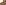
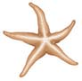
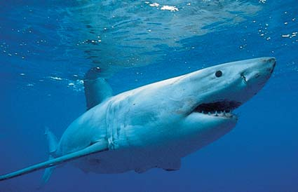
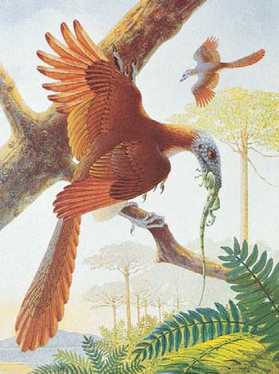

32 Los deuteróstomos
675
CONCEPTOS CLAVE
32.1 Equinodermos y cordados son los dos linajes deuteróstomos más exitosos, en términos de diversidad, número de especies y número de individuos. 32.2 Los equinodermos se caracterizan por simetría radial en adultos, un sistema vascular acuífero, pie ambulacral y piel espinosa. 32.3 En algún momento de su vida, un cordado tiene un notocordo; un cordón nervioso tubular dorsal; una cola postanal muscular; y un endostilo (o glándula tiroides). 32.4 Los cordados invertebrados incluyen tunicados y anfi oxos. 32.5 Los caracteres derivados compartidos de los vertebrados incluyen columna vertebral, cráneo, células de cresta neural y endoesqueleto de cartílago o hueso. 32.6 Entre los primeros vertebrados, los ostracodermos eran peces armados sin mandíbulas. Los mixinos y lampreas existentes no tienen ni mandíbulas ni aletas pareadas. 32.7 Mandíbulas y aletas fueron adaptaciones clave que contribuyeron al éxito de los peces con mandíbulas, y el desarrollo de extremidades fue importante en la transición hacia la vida terrestre. 32.8 La evolución del huevo amniótico permitió a los animales volverse completamente terrestres; el huevo amniótico fue la adaptación clave que condujo a la evolución de los reptiles y, más tarde, a las aves y mamíferos.
¿
Qué tiene en común una estrella de mar con un pez, una rana, un halcón o un humano? Podría pensar que es extraño agrupar los equinodermos (estrellas de mar, erizos de mar y dólares de arena) con los cordados, el fi lo al que pertenecen los humanos y otros animales con columna vertebral. Sin embargo, aun cuando estos animales parezcan y se comporten de manera muy diferente, la evidencia fósil y datos morfológicos, de desarrollo y moleculares sugieren que cordados y equinodermos comparten un ancestro común y están cercanamente emparentados. En el capítulo 31 estudió las dos principales ramas de protóstomos del reino animal: lofotrocozoos y ecdisozoos. En este capítulo el enfoque está en la tercera gran rama del reino animal: deuteróstomos. Algunos biólogos especulan que el último ancestro común de los deuteróstomos fue un animal que obtenía alimento al fi ltrar el agua del océano. Los dos grupos principales (fi los) de animales vivientes asignados a los deuteróstomos son los equinodermos y los cordados. El subfi lo cordado más grande es Vertebrata, que incluye los animales con los que los humanos están más familiarizados: peces, anfi bios, reptiles (incluidas aves) y mamíferos. Los equinodermos están representados en la fotografía por el erizo lápiz, y los cordados están representados por los peces. El capítulo comienza con una introducción a los deuteróstomos, y un estudio de los equinodermos. Con su inusual simetría, pieles espinosas,
Deuteróstomos representativos. Este hábitat marino fotografi ado en Hawai incluye un equinodermo conocido como erizo lápiz ( Heterocentrotrus mammilatus ); y cordados, representados por peces, el budión payaso ( Coris gaimard ) con su cola amarilla y el ídolo moro ( Zanclus cornutus ).
James D. Mauseth, University of Texas
676 Capítulo 32
sistema vascular acuífero y pie ambulacral, los equinodermos son uno de los grupos animales más particulares. Luego se dirigirá la atención hacia los cordados. Se describirán las características clave de los cordados y se estudiarán los cordados invertebrados. Después de una introducción a los vertebrados, se estudian los peces sin mandíbulas y la evolución de mandíbulas y extremidades. Se estudiará la evolución de las adaptaciones que hicieron posible la transición a la vida sobre tierra. Luego se describirá la evolución de reptiles (incluidas las aves) y mamíferos.
32.1 ¿QUÉ SON LOS DEUTERÓSTOMOS?
OBJETIVO DE APRENDIZAJE
1 Identifi car las características derivadas compartidas de los deuteróstomos y describir brevemente los hemicordados.
Deuterostomia , la tercera gran rama del reino animal, incluye a los equinodermos (estrellas de mar, erizos de mar y dólares de arena) y los cordados , el fi lo al que pertenecen los humanos y otros vertebrados (animales con columna vertebral). Los biólogos también clasifi can a los hemicordados , un pequeño grupo de animales marinos con forma de gusano, como deuteróstomos. Los hemicordados tienen un cuerpo en tres partes, que incluye una probóscide, collar y tronco. Estos animales también tienen un característico anillo de cilios alrededor de la boca. El más familiar de los hemicordados es el gusano bellota , animal que vive enterrado en lodo o arena. Los deuteróstomos evolucionaron a partir de un ancestro común durante el eón Proterozoico hace más de 550 millones de años (ma). Los principales grupos estuvieron presentes durante el Cámbrico temprano. Los deuteróstomos se caracterizan por varios caracteres derivados compartidos (sinapomorfi as) , novedades evolutivas ausentes en su ancestro común más reciente (vea el capítulo 23). Sus características que las defi nen son semejantes en sus patrones de desarrollo. Por ejemplo, los deuteróstomos se caracterizan más por su segmentación radial que en espiral (vea el capítulo 30). Su segmentación es indeterminada, lo que signifi ca que el destino de sus células se fi ja más tarde en el desarrollo que en el caso de los protóstomos. El blastoporo de los deuteróstomos se convierte en el ano (o se ubica cerca del futuro sitio del ano), y la boca se desarrolla a partir de una segunda abertura en el extremo anterior del embrión (de ahí el nombre deuteróstomos , que se deriva de las palabras griegas “segunda boca”). Otra característica de los deuteróstomos es la presencia de faringotremas (aberturas en la faringe) en algún momento de su ciclo de vida. Hemicordados y cordados tienen faringotremas. Aunque existe evidencia de que algunos equinodermos primitivos tenían faringotremas, los equinodermos vivientes perdieron esta característica. Los deuteróstomos basales (miembros del grupo deuteróstomo más primitivo en evolucionar) tienen un tipo de larva con una banda de cilios con forma de bucle que usan para locomoción. Los deuteróstomos tienen celoma verdadero.
Repaso
■ ¿Cuáles son las tres características derivadas compartidas de los deuteróstomos?
32.2 EQUINODERMOS
OBJETIVO DE APRENDIZAJE
2 Identifi car tres características compartidas derivadas de los equinodermos y describir las principales clases de equinodermos.
Los equinodermos (fi lo Echinodermata ) tienen uno de los planes corporales más enormemente derivado del reino animal. Las larvas equinodermas tienen simetría bilateral, son ciliadas y de nado libre. Sin embargo, durante el desarrollo, el cuerpo se reorganiza, y el adulto muestra simetría pentarradial , en la que el cuerpo se ordena en cinco partes alrededor de un eje central. Los biólogos plantean la hipótesis de que los primeros equinodermos eran sésiles y que la simetría radial evolucionó como una adaptación a dicho estilo de vida. Su simetría radial permite a estos animales responder de manera efectiva en toda dirección de su ambiente circundante. La característica derivada más exclusiva de los equinodermos es el sistema vascular acuífero , una red de canales y cámaras llenos con fl uido. En la estrella de mar, por ejemplo, el agua de mar entra a través de pequeños poros en el madreporito , una estructura con forma de colador sobre la superfi cie corporal. Cilios que recubren los canales del sistema mueven el agua. Ramifi caciones del sistema vascular acuífero conducen a numerosos pies ambulacrales diminutos que se extienden cuando se llenan con fl uido. Cada pie ambulacral recibe fl uido del sistema principal de canales. Un saco muscular redondo, o ámpula , en la base del pie, almacena fl uido y se usa para operar el pie tubular. Una válvula separa cada pie tubular de otras partes del sistema. Cuando cierra la válvula, la ámpula se contrae y fuerza fl uido hacia el pie tubular. El fl uido hace que se extienda el pie tubular. En la parte inferior del pie, una estructura tipo ventosa presiona contra cualquier superfi cie sobre la que se apoye el pie tubular y se adhiere a ella. El sistema vascular acuífero funciona en la alimentación y el intercambio de gases, y sirve como esqueleto hidrostático importante en la locomoción. Otra característica única de los equinodermos es el endoesqueleto , un esqueleto interno, cubierto por una delgada epidermis ciliada. El endoesqueleto consiste en placas de carbonato de calcio (CaCO 3 ) y espinas. El nombre Equinodermata , derivado de palabras que signifi can “piel con espinas”, fue inspirado por las espinas que se proyectan hacia afuera desde el endoesqueleto. Algunos grupos tienen espinas modifi cadas con forma de pinzas, llamadas pedicelarios , sobre la superfi cie corporal. Estas estructuras, que sólo se encuentran en los equinodermos, mantienen la superfi cie del animal libre de detritus. Los equinodermos tienen un celoma bien desarrollado que contiene fl uido celómico que transporta materiales. Aunque su estructura varía en diferentes grupos, el sistema digestivo completo es el sistema corporal más prominente. En las diversas clases se encuentran varias estructuras respiratorias. No presentan órganos excretores. El sistema nervioso es simple, y por lo general consiste en un anillo nervioso con nervios que se extienden fuera de él. Los equinodermos no tienen cerebro. Los sexos por lo común están separados, y óvulos y espermatozoides usualmente se liberan en el agua, donde tiene lugar la fecundación. Los equinodermos evolucionaron a partir de ancestros con simetría bilateral, probablemente durante el período Cámbrico temprano. Lograron máxima diversidad hacia mediados de la era Paleozoica, hace aproximadamente 400 ma. Hacia comienzos de la era Mesozoica, hace 251 ma, declinaron y dejaron cinco grupos principales que sobreviven hasta el presente. Los biólogos han identifi cado alrededor de 7000 especies vivientes y más de 13,000 especies extintas. Todos los equinodermos
Los deuteróstomos 677
de mar; clase Ophiuroidea, estrellas cesta y estrellas quebradizas; clase Echinoidea, erizos de mar y dólares de arena; y clase Holothuroidea, pepinos de mar ( FIGURA 32-1 y TABLA 32-1 ).
habitan ambientes marinos. Se encuentran en el océano en todas las profundidades. Este libro considera los cinco grupos existentes: clase Crinoidea, lirios de mar y estrellas pluma; clase Asteroidea, estrellas
Esponjas
Cnidarios
Ctenóforos
Lofotrocozoos
Deuterostomia
Ecdisozoos
Equinodermos
Hemicordados
Cordados
Ancestro coanoflagelado
Clase Crinoidea. Las estrellas pluma usan sus delgados apéndices articulados para aferrarse a la superficie de una roca o arrecife de coral. Pueden arrastrarse y con frecuencia se alejan para escapar a los depredadores.
clase Ophiuroidea. Estrella quebradiza margarita ( Ophiopholis aculeata ), fotografiada en Muscongus Bay, Maine. (b) Clase Asteroidea. Estrella de mar anaranjada y roja ( Fromia monilis ) sobre coral burbuja.
Clase Echinoidea. Con su cuerpo circular aplanado, el dólar de arena ( Dendraster excentricus ) está adaptado para enterrarse en el fondo marino.
Clase Holothuroidea. Un pepino de mar ( Thelonota ) yergue su cuerpo para desovar.
D. J. Wrobel/Monterey Bay Aquarium
D. J. Wrobel/Monterey Bay Aquarium ©Stubblefield Photography/Shutterstock
Robert Dunne/Photo Researchers, Inc. Peter Scoones/Seaphoto, Ltd.
FIGURA 32-1 Equinodermos representativos
678 Capítulo 32
La mayoría de las estrellas de mar son depredadores carnívoros y carroñeros que se alimentan de crustáceos, moluscos, anélidos e incluso otros equinodermos. Ocasionalmente capturan peces pequeños. El sistema vascular acuífero de las estrellas de mar no permite movimientos rápidos, de modo que sus presas comúnmente consisten en animales estacionarios o de movimiento lento, como las almejas. Para atacar una almeja u otro molusco bivalvo, la estrella de mar lo monta y asume una posición corcovada mientras monta a horcajadas el borde opuesto a la articulación. Luego, manteniéndose en posición con su pie tubular, la estrella de mar desliza su delgado estómago fl exible a través de su boca y entre las valvas (partes de la concha) cerradas, o ligeramente abiertas, de la almeja. Mientras la almeja todavía se encuentra en su concha, la estrella de mar segrega enzimas que digieren las partes blandas de la almeja hasta la consistencia de una sopa espesa. Cuando la estrella de mar ingiere la carne parcialmente digerida, la digiere aún más con enzimas segregadas por glándulas digestivas ubicadas en cada brazo. El sistema circulatorio de las estrellas de mar está defi cientemente desarrollado y quizás es de poca ayuda en el transporte de materiales. En su lugar, fl uido celómico, que llena el gran celoma y baña los tejidos internos, asume esta función. Los desechos metabólicos pasan al exterior mediante difusión a través del pie tubular y branquias dérmicas. El sistema nervioso consiste en un anillo de tejido nervioso que envuelve la boca y un nervio que se extiende desde este anillo hacia cada brazo. Las margaritas de mar son un curioso grupo de asteroideos caracterizado por pequeños cuerpos aplanados con forma de disco (menos de 1 cm de diámetro) sin brazos ni boca. Habitan en madera rica en bacterias hundida en aguas profundas y aparentemente absorben bacterias a través de su superfi cie corporal.
Las estrellas pluma y los lirios de mar se alimentan por suspensión
Las estrellas pluma y los lirios de mar (clase Crinoidea ) son los equinodermos vivientes más antiguos (vea la fi gura 32-1a). Aunque se conocen muchos crinoideos extintos, se han identifi cado relativamente pocas especies vivientes. Las estrellas pluma son mótiles, aunque con frecuencia permanecen en la misma ubicación durante largos períodos. Los lirios de mar son sésiles y permanecen adheridos al lecho marino mediante un tallo. Los crinoideos remueven alimento suspendido del agua. Muchos brazos plumosos ramifi cados se extienden hacia arriba. Numerosos pies tubulares con forma de pequeños tentáculos se ubican a lo largo de los brazos plumosos. Dichos pies tubulares están recubiertos con moco que atrapa organismos microscópicos. La superfi cie oral (ubicación de la boca) está en el lado superior del disco. En todos los demás equinodermos, la boca se ubica en el lado interior del disco, hacia el sustrato.
Muchas estrellas de mar capturan presas
Las estrellas de mar son asteroideos (clase Asteroidea ; vea la fi gura 32-1b). Sus cuerpos consisten en un disco central de donde se extienden de 5 a más de 20 brazos, o rayos ( FIGURA 32-2 ). La superfi cie inferior de cada brazo tiene cientos de pares de pies tubulares. El endoesqueleto consiste en una serie de placas calcáreas que permiten cierto movimiento de los brazos. Delicadas branquias dérmicas, pequeñas extensiones de la pared corporal, realizan el intercambio de gases. La boca se encuentra en el centro del lado inferior del disco.
Clases de equinodermos
Clase y animales representativos Características
Crinoidea Estrellas pluma, lirios de mar
Estrellas pluma mótiles; lirios de mar, sésiles, adheridos al lecho marino mediante tallos; superficie oral sobre lado superior de disco; pie tubular a lo largo de brazos plumosos atrapa organismos microscópicos.
Asteroidea Estrellas de mar
Brazos (rayos) extendidos desde disco central; pie tubular sobre superfi cie inferior de cada brazo; boca en centro de superfi cie inferior de disco; depredadores carnívoros y carroñeros.
Ophiuroidea Estrellas cesta, estrellas quebradizas
Parecen estrellas de mar, pero tienen brazos largos y delgados y más de ellos se proyectan desde el disco central; pie tubular usado para recolectar y manipular alimento.
Echinoidea Erizos de mar, dólares de arena
Placas esqueléticas aplanadas y fusionadas para formar una testa; los dólares de arena se entierran en la arena y se alimentan de partículas orgánicas; los erizos de mar pastan por las algas.
Holothuroidea Pepinos de mar
El cuerpo es un alargado saco muscular; la boca está rodeada por tentáculos que son pies tubulares modifi cados; animales lentos que viven en el fondo marino; muchas especies eyectan órganos cuando las condiciones son malas; para defenderse, pueden sacar unos túbulos desde el ano.
TABLA 32-1





Los deuteróstomos 679
Muchos erizos de mar pacen algas, y raspan el lecho marino con sus dientes calcáreos. Los erizos de mar usan su pie tubular para locomoción. También se empujan con sus espinas móviles. En algunas especies, las espinas que cubren el cuerpo pueden penetrar la carne y son difíciles de remover. Tan atemorizantes son estas espinas que los nadadores de las playas tropicales con frecuencia tienen la precaución de usar zapatos cuando se aventuran fuera de la costa, donde estos alfi leteros vivientes pueden habitar en abundancia.
Los pepinos de mar son lentos animales alargados
Los pepinos de mar (clase Holothuroidea ) reciben su nombre de manera adecuada, pues algunas especies tienen aproximadamente el tamaño y la forma de un pepino. El cuerpo alargado es un fl exible saco muscular (vea la fi gura 32-1e). La boca generalmente está rodeada por un círculo de tentáculos que son pies ambulacrales modifi cados. El endoesqueleto consiste en placas microscópicas incrustadas en la pared corporal. El sistema circulatorio, que está más enormemente desarrollado que en otros equinodermos, funciona para transportar oxígeno y acaso nutrientes. Los pepinos de mar son animales lentos que por lo general viven en el fondo del mar, en ocasiones enterrados en el cieno. Algunos pastan con sus tentáculos, mientras otros estiran sus tentáculos rami-
Estrellas cesta y estrellas quebradizas constituyen el grupo más grande de equinodermos
Estrellas cesta y estrellas quebradizas (estrellas serpiente) constituyen el grupo más grande de equinodermos (clase Ophiuroidea ) tanto en número de especies como de individuos (vea la fi gura 32-1c). Estos animales se parecen a las estrellas de mar en cuanto a que sus cuerpos consisten en un disco central con brazos. Sin embargo, los brazos son largos y delgados y más notablemente destacados desde el disco central. Algunas estrellas quebradizas usan sus brazos para locomoción y hacen movimientos de remado. Sus pies tubulares carecen de ventosas; pueden usarlos para recolectar y manipular alimento y también pueden tener una función sensorial, acaso la del gusto.
Erizos de mar y dólares de arena tienen espinas móviles
Los erizos de mar y los dólares de arena (clase Echinoidea ) no tienen brazos (vea la fi gura 32-1d y la fotografía de apertura del capítulo). Sus placas esqueléticas son aplanadas y fusionadas para formar una concha sólida llamada testa. El cuerpo aplanado del dólar de arena está adaptado para enterrarse en la arena, donde se alimenta de diminutas partículas orgánicas. Los dólares de arena tienen espinas más pequeñas que los erizos de mar.
Glándula digestiva
Pie tubular
Estómago Madreporito
Glándula digestiva
Ámpula
Gónada
Pedicelarios
Branquia dérmica
Espina
Ano Pie tubular
Gónada
Pie tubular
5 mm
Superficie superior con detalle amplificado. El extremo se volteó para mostrar el pie tubular de la superficie inferior.
Charles Seaborn/Odyssey Productions, Chicago
1
2
3
4 5
Brazo disecado para mostrar gónadas bien desarrolladas.
Cuerpo superior y glándulas digestivas removidos para exponer las ámpulas de algunos cientos de pies tubulares ( vista amplificada ).
Se removieron los órganos para mostrar las glándulas digestivas. Sección transversal del brazo.
FIGURA 32-2 Plan corporal de una estrella de mar (a) Estrella de mar vista desde arriba, con sus brazos en varias etapas de disección. Estructuras similares están presentes en cada brazo, pero algunos órganos no se muestran con la fi nalidad de destacar ciertas estructuras. El estómago de dos partes está en el disco central, con el ano en la superfi cie aboral ( superior ) y la boca abajo, sobre la superfi cie oral. (b) Sección transversal de brazo y pie tubular. (c) MO de pie tubular de estrella de mar.
680 Capítulo 32
Los cordados tienen faringotremas (también llamadas hendiduras branquiales faríngeas ) o arcos faríngeos durante alguna época en su ciclo de vida ( FIGURA 32-4 ). En el embrión, una serie de arcos y surcos branquiales alternados se desarrollan en la pared corporal en la región faríngea (garganta). Los arcos faríngeos se extienden lateralmente desde la porción anterior del tubo digestivo hacia los surcos. En los cordados acuáticos, el tejido se separa donde los arcos se unen a los surcos, y forman hendiduras.
fi cados en el agua y esperan que la cena fl ote hacia ellos. Algas y otros bocaditos son capturados en moco a lo largo de los tentáculos. Un interesante hábito de algunos pepinos de mar es la evisceración, en la que el tubo digestivo, estructuras respiratorias y gónadas se expulsan del cuerpo, generalmente cuando las condiciones ambientales no son favorables. Cuando las condiciones mejoran, regeneran las partes perdidas. Incluso más curioso, cuando ciertos pepinos de mar están irritados o bajo ataque, ¡dirigen su parte trasera hacia el enemigo y disparan túbulos rojos desde su ano! Estas inusuales armas se vuelven pegajosas en el agua de mar y el animal atacante queda desesperadamente enmarañado en el enredijo de túbulos con forma de espagueti. Algunos de estos túbulos liberan una sustancia tóxica.
Repaso
■ ¿Cuáles son las tres características derivadas de los equinodermos? Describa cada una.
■ ¿Cómo difi eren las estrellas de mar de los crinoideos? ¿De los erizos de mar?
32.3 LOS CORDADOS: CARACTERÍSTICAS DEFINITORIAS
OBJETIVO DE APRENDIZAJE
3 Describir las características de los cordados, incluidas cuatro características derivadas compartidas.
En la actualidad, los biólogos asignan los cordados (fi lo Chordata ) a tres grupos, o subfi los: urocordados, animales marinos llamados tunicados ; cefalocordados, animales marinos llamados anfi oxos ; y vertebrados, animales con columna vertebral. Los sistemáticos actualmente debaten si los urocordados o los cefalocordados son el grupo hermano de los cordados ( FIGURA 32-3 ). Los cordados son deuteróstomos. Son celomados con simetría bilateral, un plan corporal de tubo dentro de tubo, y tres capas germinales bien desarrolladas. Cuatro características derivadas compartidas distinguen a los cordados de todos los otros grupos de animales. Estas características, que evolucionaron en conexión con sus métodos evolutivos de locomoción y de obtención de alimento, incluyen el notocordio; el cordón nervioso tubular dorsal; una cola postanal; y un endostilo o glándula tiroidea.
- Todos los cordados tienen un notocordio durante alguna etapa de su ciclo de vida. El notocordio es una barra dorsal longitudinal compuesta de cartílago. El notocordio es fi rme pero fl exible, y sostiene al cuerpo. 2. En algún momento de su ciclo de vida, los cordados tienen un cordón nervioso tubular dorsal . El cordón nervioso cordado difi ere del cordón nervioso de la mayoría de los otros animales en que se ubica en forma dorsal en lugar de ventralmente, es hueco en vez de sólido, y es singular en vez de doble. 3. Los cordados tienen una larva o embrión con una cola postanal muscular, un apéndice que se extiende posterior al ano. 4. El endostilo es un surco en el piso de la faringe que segrega moco y atrapa partículas de alimento en el agua de mar que pasa a través de la faringe. El endostilo está presente en las larvas de urocordados, cefalocordados y lampreas. La glándula tiroides evolucionó a partir del endostilo y está presente en todos los otros cordados.
Equinodermos (estrellas de mar, erizos de mar)
Hemicordados (gusanos bellota)
Urocordados (tunicados)
Cefalocordados (anfioxos)
Vertebrados
Cordados
Ancestro deuteróstomo
Notocordio; cordón nervioso tubular dorsal; cola postanal; endostilo
Cráneo, columna vertebral, células de cresta neural
Hendiduras branquiales en faringe
Segmentación radial determinada
FIGURA 32-3 Relaciones evolutivas de los cordados Este cladograma muestra relaciones fi logenéticas hipotéticas entre deuteróstomos, incluidos cordados ( región marrón claro ), con base en datos estructurales y de ADN. Las posiciones relativas de urocordados y cefalocordados pueden cambiar conforme se consideren nuevos datos.
Cerebro
Boca
Cordón nervioso tubular dorsal Notocordio Cola postanal
Segmentos musculares Intestino
Ano
Faringotremas
Corazón
Faringe
Endostilo
FIGURA 32-4 Plan corporal cordado generalizado Observe las características derivadas compartidas: notocordio; cordón nervioso tubular dorsal; cola postanal; y endostilo. Otras características clave incluyen faringotremas y músculos segmentados.

Los deuteróstomos 681
32.4 CORDADOS INVERTEBRADOS
OBJETIVO DE APRENDIZAJE
4 Comparar tunicados y anfi oxos, y resumir la fi logenia de los cordados.
Algunos cordados no son vertebrados. Los cordados invertebrados incluyen tunicados (urocordados) y anfi oxos (cefalocordados).
Los tunicados son animales marinos comunes
Los tunicados , o urocordados (subfi lo Urochordata ), incluyen las ascidias y sus parientes ( FIGURA 32-5 ). Los tunicados larvarios tienen características típicas de los cordados y superfi cialmente parecen renacuajos. El cuerpo expandido tiene una faringe con hendiduras, y la larga cola muscular contiene un notocordio y un cordón nervioso tubular dorsal. Algunos tunicados ( apendicularias ) retienen sus características cordadas y la habilidad para nadar. Estos animales son miembros comunes del zooplancton.
La faringe perforada evolucionó por primera vez como adaptación para fi ltrar el alimento. Conforme el agua fl uía a través de la boca y salía de la faringe a través de las hendiduras branquiales, las partículas de alimento suspendidas quedaban atrapadas en moco. Más tarde, evolucionaron modifi caciones, y adaptaron las hendiduras branquiales para el intercambio de gases en los peces y algunos otros vertebrados acuáticos. Temprano en la evolución vertebrada, los arcos faríngeos anteriores evolucionaron en mandíbulas. Los arcos faríngeos no son una característica derivada de los cordados porque ellos también están presentes en los hemicordados. Usualmente, los cordados tienen un endoesqueleto y un sistema circulatorio cerrado con un corazón ventral. Los cordados tienen cuerpos segmentados, pero la especialización es tan pronunciada que la segmentación básica del plan corporal puede no ser aparente. Por ejemplo, en los vertebrados, aunque la segmentación del cuerpo no es obvia, músculos y nervios están organizados en segmentos.
Repaso
■ ¿Cuáles son cuatro características derivadas compartidas de los cordados?
■ ¿Cómo se diferencia el cordón nervioso cordado del cordón nervioso de la mayoría de los otros animales?
Cordados
Equinodermos (estrellas de mar, erizos de mar)
Hemicordados (gusanos bellota)
Urocordados (tunicados)
Cefalocordados (anfioxos)
Vertebrados
Ancestro deuteróstomo
Túnica
Ovario
Testículos
Corazón
Atrio
Esófago
Estómago
Glándula digestiva
Ano
Sifón inhalante
Ganglio
Sifón exhalante
Intestino
Tentáculos orales
Faringe con hendiduras
Endostilo
Papila adhesiva
Corazón Estómago
Cola postanal
Faringe con hendiduras Abertura inhalante Atrio
Abertura exhalante
Cordón nervioso
Notocordio
Sifones inhalante ( arriba ) y exhalante ( lado ) de Halocynthia aurantium , un tunicado solitario.
Etapa larvaria natatoria de una especie colonial, Distaplia occidentalis .
Vista lateral de un tunicado adulto. Las flechas azules representan el flujo de agua, y las flechas rojas representan la ruta del alimento.
Estructura interna de un tunicado larvario ( vista lateral ).
0.5 mm
Richard A. Cloney/University of Washington
Robert Shupak
FIGURA 32-5 Animada Plan corporal tunicado
682 Capítulo 32
de pez, de 3 a 8 cm de largo y puntiagudos en ambos extremos. Están ampliamente distribuidos en mares poco profundos. Las larvas pueden nadar libremente, pero los adultos por lo general se entierran en la arena en agua poco profunda cerca de la costa. En algunas partes del mundo son una importante fuente de alimento. Una pescadería china reporta una captura anual de 35 toneladas (alrededor de mil millones de anfi oxos). Las características de los cordados están enormemente desarrolladas en los anfi oxos. El notocordio se extiende desde la punta anterior (“cabeza”; de ahí el nombre Cephalochordata ) hasta la punta posterior. Un cordón nervioso tubular dorsal también se extiende a lo largo del animal, y muchos pares de faringotremas son evidentes en la larga región faríngea ( FIGURA 32-6 ). Aunque superfi cialmente son similares a los peces, los anfi oxos tienen un plan corporal mucho más simple. No tienen aletas pareadas, mandíbulas, órganos sensoriales, corazón o una cabeza o cerebro bien defi nidos. Como los tunicados, los anfi oxos se alimentan por fi ltración. Cilios en la boca y faringe llevan una corriente de agua hacia la boca. Microscópicos organismos en el agua quedan atrapados en el moco segregado por el endostilo, y luego se mueven hacia el intestino mediante cilios en batimiento. El agua pasa a través de las faringotremas hacia el atrio, una cámara con una abertura ventral (el atrioporo ) ubicado anterior al ano. Los desechos metabólicos se eliminan mediante protonefr idios ciliados, ordenados en segmentos, que abren en el atrio. A diferencia de la circulación en otros invertebrados, la sangre fl uye anteriormente en el vaso ventral y posteriormente en el vaso dorsal de los anfi oxos. Este patrón circulatorio es similar al de los peces.
Los sistemáticos debaten la fi logenia de los cordados
Fósiles de cordados primitivos contribuyen a la comprensión de la fi logenia cordada. Los cordados invertebrados tienen cuerpo blando y no dejan muchos fósiles. Sin embargo, algunos fósiles clave bien preservados que datan del Cámbrico medio se encontraron en Burgess
La mayoría de los tunicados son ascidias , conocidas comúnmente como sifones de mar (clase Ascidiacea). Una larva de sifón de mar nada durante algún tiempo, luego se adhiere a una roca, pilote o al fondo del mar. Pierde su cola, notocordio y gran parte de su sistema nervioso. Los sifones de mar adultos tienen forma de barril y son animales marinos sésiles, a diferencia de otros cordados. De hecho, con frecuencia se confunden con esponjas o cnidarios. Sólo las faringotremas, el endostilo y la estructura de sus larvas indican que el sifón marino es un cordado. Los tunicados adultos desarrollan una cubierta protectora, o túnica , que puede ser blanda y transparente o bastante coriácea. Curiosamente, la túnica consiste en un carbohidrato muy parecido a la celulosa. La túnica tiene dos aberturas: el sifón inhalante, a través del cual entra el agua y el alimento; y el sifón exhalante, a través del cual pasan al exterior agua, productos de desecho y gametos. Los sifones de mar reciben su nombre por su práctica, cuando está irritado, de expulsar con fuerza un chorro de agua desde el sifón exhalante. Los tunicados se alimentan por fi ltración, y remueven el plancton suspendido en el chorro de agua que pasa a través de la faringe. Las partículas de alimento quedan atrapadas en moco segregado por células en el endostilo , un surco que se extiende a lo largo de la faringe. Las células ciliadas de la faringe mueven el chorro de moco cargado con alimento hacia el esófago. Gran parte del agua que entra a la faringe sale a través de las faringotremas hacia el atrio (cámara) y se descarga mediante el sifón exhalante. Algunas especies de tunicados forman grandes colonias donde los miembros comparten una túnica y un sifón exhalante comunes. Las formas coloniales con frecuencia se reproducen asexualmente mediante gemación. Las formas sexuales por lo general son hermafroditas.
Los anfi oxos muestran claramente características de cordados
La mayoría de los cefalocordados (subfi lo Cephalochordata ) pertenecen al género Branchiostoma , que consiste en animales usualmente conocidos como anfi oxos . Los anfi oxos son animales translúcidos con forma
Aleta caudal
Aleta caudal Gónadas
Tentáculos
Notocordio (a)
Cordados
Equinodermos (estrellas de mar, erizos de mar)
Hemicordados (gusanos bellota)
Urocordados (tunicados)
Cefalocordados (anfioxos)
Vertebrados
Ancestro deuteróstomo
© Morphart Creations Inc./Shutterstock
Cordón nervioso
Cordón nervioso
Tentáculos Intestino Atrioporo
Notocordio
Faringotremas (hendiduras branquiales)
FIGURA 32-6 Animada Plan corporal cefalocordado (a) Fotografía de un anfi oxo, Branchiostoma . Observe las prominentes hendiduras branquiales faríngeas. (b) Sección longitudinal que muestra características derivadas y otras estructuras internas.
Los deuteróstomos 683
32.5 INTRODUCCIÓN A LOS VERTEBRADOS
OBJETIVOS DE APRENDIZAJE
5 Describir cuatro características derivadas compartidas de los vertebrados. 6 Describir los principales taxones de vertebrados existentes.
Con alrededor de 50,000 especies descritas, los vertebrados (subfi lo Vertebrata ) son menos diversos y mucho menos numerosos que los insectos. Sin embargo, los vertebrados rivalizan con los insectos en sus adaptaciones a una gran variedad de estilos de vida ( FIGURA 32-7 ). Además de las características cordadas básicas, los vertebrados tienen algunas características derivadas compartidas que no se encuentran en otros grupos.
La columna vertebral es una característica derivada de los vertebrados
Los vertebrados se distinguen de otros cordados en que tienen una columna vertebral que forma el eje esquelético del cuerpo. Este sostén fl exible se desarrolla alrededor del notocordio, y en la mayoría de las especies sustituye principalmente al notocordio durante el desarrollo embrionario. La columna vertebral consiste en segmentos cartilaginosos u óseos llamados vértebras . Proyecciones dorsales de las vértebras encierran el cordón nervioso en toda su longitud. Anterior a la columna vertebral, un cráneo cartilaginoso u óseo encierra y protege el cerebro, el extremo anterior agrandado del cordón nervioso. El cráneo y la columna vertebral son partes del endoesqueleto . En contraste con el exoesqueleto no vivo de muchos invertebrados, el endoesqueleto vertebral es un tejido vivo que crece con el animal. Algunos vertebrados (peces sin mandíbulas y cartilaginosos) tienen esqueletos hechos de cartílago. Sin embargo, en la mayoría de los vertebrados, el esqueleto principalmente es hueso, un tejido que contiene fi bras hechas de la proteína colágeno. La dura matriz de hueso consiste en el compuesto hidroxiapatita, compuesta principalmente de fosfato de calcio. Muchas características comunes a los vertebrados se derivaron de un grupo de células llamadas células de cresta neural (vea el capítulo 17). Estas células que se encuentran sólo en los vertebrados, aparecen al principio del desarrollo y migran a diferentes partes del embrión. Las células de cresta neural permiten alcanzar o infl uyen en el desarrollo de muchas estructuras, incluyendo nervios, músculos de la cabeza, cráneo y mandíbulas. Recuerde que los genes Hox son importantes en la determinación de patrones de desarrollo en los embriones. Específi camente, los genes Hox determinan el destino de las células en el eje antero-posterior. Dichos genes se presentan en grupos sobre cromosomas específi cos. Todos los invertebrados y primeros cordados estudiados tienen un cúmulo de genes Hox , pero los vertebrados tienen cuatro grupos duplicados. Otros grupos genéticos, que incluyen algunos factores que codifi can transcripción, también se duplicaron durante la evolución de los primeros vertebrados. La importancia de estos cambios genéticos es el foco de la investigación actual, pero es razonable plantear la hipótesis de que el aumento en complejidad genética contribuyó al desarrollo de cuerpos más complejos y variados. Recuerde que los invertebrados muestran una tendencia evolutiva hacia la cefalización , la concentración de células nerviosas y órganos sensoriales en una cabeza defi nida. La evolución de las vértebras se caracteriza por cefalización pronunciada . El cerebro se vuelve más grande
Shale de Columbia Británica, Canadá. En Chengjian y Haikou, China, se descubrieron sitios de fósiles cámbricos tempranos. En Chengjiang, rocas de grano fi no de hace aproximadamente 530 millones de años de antigüedad preservaron animales de cuerpo blando, incluidos Haikouella , con cierto detalle. Haikouella medía entre 2 y 3 cm de largo y poseía un cordón nervioso, notocordio, branquias, segmentos musculares y cerebro. Muchos biólogos ven a Haikouella como un cordado primitivo. Algunos investigadores plantean la hipótesis de que este fósil representa una forma transicional entre cefalocordados y vertebrados. Pikaia , un fósil con forma de anfi oxo descubierto en Burgess Shale, tenía un notocordio primitivo con músculos adheridos al mismo que permitían la locomoción. Con aproximadamente 4 cm de largo, Pikaia tenía una aleta caudal y quizás fi ltraba alimento del agua. Pikaia se considera un cordado temprano, muy probablemente un cefalocordado. ¿Cuál es el grupo hermano del vertebrado: cefalocordados o urocordados? Los datos estructurales así como los moleculares sugieren que los cefalocordados son el grupo hermano de los vertebrados. El ancestro más reciente de cefalocordados y vertebrados podría parecer una larva tunicada. Importantes características derivadas compartidas incluyen la presencia de notocordio, cordón nervioso y cola postanal en los adultos. Otra es la presencia de somitas , una serie de bloques pareados de mesodermo que se desarrollaron a cada lado del notocordio. Las somitas son estructuras temporales que defi nen la segmentación del embrión. En los vertebrados, origina las vértebras, costillas y ciertos músculos esqueléticos. Otra semejanza entre cefalocordados y vertebrados es el cordón nervioso anfi oxo, que tiene regiones especializadas, y corresponde a los cerebros anterior y medio de los vertebrados. Datos moleculares apoyan los cefalocordados como grupo hermano de los vertebrados, con base en semejanzas en secuencias génicas ribosómicas y mitocondriales. Sin embargo, con base en secuencias genómicas de tunicados (incluido el tunicado Ciona intestinalis ), algunos biólogos argumentan que el genoma urocordado corresponde más estrechamente con el del ancestro cordado y que los urocordados son el grupo hermano de los vertebrados. El tunicado Ciona intestinalis es un excelente organismo modelo para estudiar el desarrollo cordado, pues su genoma consiste sólo de aproximadamente 16,000 genes que codifi can proteínas, el conjunto básico de genes que se encuentra en cordados. Es interesante que más o menos el 80% de los genes de Ciona se encuentren en los vertebrados. De hecho, Ciona tiene la mayoría de las familias de genes vertebrados, pero en forma simplifi cada. Por ejemplo, Ciona sólo tiene una sola copia de cada familia genética involucrada en señalización celular y reconocimiento del desarrollo, mientras que los vertebrados tienen dos o más copias de estas familias de genes. (Una familia de genes es un puñado de genes que evolucionaron con el tiempo a partir de un solo gen ancestral a través de duplicación y divergencia.) Algunas de las copias “adicionales” probablemente evolucionaron para codifi car nuevas estructuras o funciones. Ciona también tiene genes para algunas estructuras y procesos vertebrados, aun cuando no exprese dichos genes. Aunque continúa el debate acerca de la fi logenia cordada y el grupo hermano de los vertebrados, en esta edición de Biología se considera a los cefalocordados como el grupo hermano de los vertebrados.
Repaso
■ ¿Cómo se evidencian las principales características cordadas derivadas en una larva tunicada y en un tunicado adulto?
■ Si el lector descubriera un pequeño animal con forma de pez a lo largo de la costa, ¿cómo lo identifi caría como anfi oxo?
684 Capítulo 32
biólogos plantean la hipótesis de que los apéndices articulados que facilitan la locomoción sobre tierra evolucionaron a partir de las aletas lobuladas (divididas) de los peces pulmonados. Los vertebrados tienen un sistema circulatorio cerrado con corazón ventral y sangre que contiene hemoglobina. El tubo digestivo completo tiene regiones especializadas y grandes glándulas digestivas (hígado y páncreas). Varias glándulas endocrinas , que son glándulas sin ductos, segregan hormonas. Riñones pareados regulan el equilibrio de fl uidos. Los sexos usualmente están separados.
y más elaborado, y sus diversas regiones se especializan para realizar diferentes funciones. Ya sean 10 o 12 pares de nervios craneales salen del cerebro y se extienden hacia varios órganos del cuerpo. Los vertebrados tienen órganos sensoriales bien desarrollados concentrados en la cabeza: ojos; oídos que sirven como órganos del equilibrio y, en algunos vertebrados, también para escuchar; y órganos para el olfato y el gusto. La mayoría de los vertebrados tienen dos pares de apéndices. Las aletas de los peces son apéndices que estabilizan al pez en el agua. Aletas pareadas pectorales y pélvicas también se utilizan en la dirección. Los
Este cladograma proporciona un marco para comprender la evolución de la diversidad de los vertebrados y adaptaciones a los ambientes acuático y terrestre.
Condrictios (peces cartilaginosos)
Actinopterigios (peces con aletas radiadas)
Actinistios (celacantos)
Dipnoos (peces pulmonados)
Anfibios
Reptiles
Reptiles (aves)
Mamíferos
Petromizóntidos (lampreas)
Mixinos
Cefalocordados (anfioxos)
Urocordados (tunicados)
Ancestro cordado
Vértebras
Células de cresta neural, cabeza
Notocordio, cordón nervioso dorsal, cola postanal, endostilo
Mandíbulas
Pulmones (o vejiga natatoria)
Extremidades
Huevo amniótico, adaptaciones que minimizan la pérdida de agua
Pelo, glándulas mamarias
Craneados
Peces sin mandíbulas
Amniotas
Tetrápodos
V e r t e b r a d o s
FIGURA 32-7 Animada Relaciones evolutivas de vertebrados existentes Este cladograma representa una interpretación fi logenética de la fi logenia vertebrada. En él se indica la evolución de ciertas características clave. Conforme se recolecten y consideren nuevos datos, los detalles del cladograma probablemente cambiarán. La fi gura 32-20 es un cladograma más detallado para relaciones amniotas.
PUNTO CLAVE

Los deuteróstomos 685
(lagartos, serpientes, tortugas, cocodrilos y aves); y la clase Mammalia , los mamíferos. Reptiles y mamíferos forman un clado conocido como amniotas , animales completamente adaptados a la vida sobre tierra.
Repaso
■ ¿Qué características derivadas compartidas distinguen a los vertebrados del resto de los cordados?
■ ¿Cuáles son las seis clases de peces? ¿Las tres clases de tetrápodos?
32.6 PECES SIN MANDÍBULAS
OBJETIVO DE APRENDIZAJE
7 Distinguir entre los principales grupos de peces sin mandíbulas.
Algunos de los vertebrados más antiguos conocidos, llamados de manera colectiva ostracodermos , consistían en varios grupos de pequeños peces acorazados sin mandíbulas que vivían en el fondo y colaban su alimento del agua (vea la fi gura 21-11). Gruesas placas óseas protegían sus cabezas de los depredadores, y gruesas escamas cubrían sus troncos y colas. La mayoría de los ostracodermos carecían de aletas. En rocas del período Cámbrico se han encontrado fragmentos de escamas de ostracodermo, pero la mayoría de los fósiles ostracodermos provienen de los períodos Ordovícico y Silúrico. Se extinguieron hacia fi nales del período Devónico. Como los ostracodermos, los mixinos y lampreas contemporáneos no tienen ni mandíbulas ni aletas pareadas. Son animales con forma de anguila, de hasta 1 m de largo. Su piel lisa carece de escamas y se sostienen mediante un esqueleto cartilaginoso y notocordio bien desarrollado. Los mixinos, asignados a la clase Myxini , son carroñeros marinos ( FIGURA 32-8 ). Excavan en busca de gusanos y otros invertebrados o depredan peces muertos y enfermos. Los mixinos usan proyecciones con forma de dientes desde sus lenguas para desprender carne de la presa. Para hacer palanca, un mixino puede amarrarse en un nudo
Los primeros vertebrados probablemente fueron animales marinos. En contraste con tunicados y anfi oxos, que usan cilios para generar una corriente de agua hacia la boca y fi ltrar partículas de alimento del agua, los vertebrados usan músculos para alimentarse. Algunos vertebrados usan músculos para impulsarse en una corriente de agua de donde pueden extraer tanto alimento como oxígeno. Los músculos en la pared del tubo digestivo son más poderosos que los cilios y quizá contribuyeron a un aumento tanto en tamaño como en actividad de los primeros vertebrados. Una faringe muscular pudo permitir a los animales triturar presas pequeñas después de su captura. La evolución de sistemas sensoriales más efectivos, un cerebro más complejo y órganos que pudieran sostener la actividad creciente fueron importantes en el cambio de la alimentación por fi ltración a un estilo de vida más activo.
La taxonomía vertebrada es una obra en continua construcción
El estudio de las relaciones evolutivas de los vertebrados es un importante foco de investigación. Los fósiles vertebrados más antiguos incluyen Haikouichthys , conodontes y un grupo conocido como ostracodermos (que se estudia en la siguiente sección). Haikouichthys era un animal con forma de pez de aproximadamente 2.5 cm de longitud. Tenía muchas características que se encuentran en los vertebrados y algunos investigadores consideran que se trató de un pez primitivo sin mandíbulas. Los conodontes eran simples cordados con forma de pez, con arcos branquiales, segmentos musculares y aletas. Tenían ojos grandes y complejos ganchos parecidos a dientes que probablemente utilizaban para capturar presas. Los conodontes fueron abundantes desde el Precámbrico hasta el período Triásico tardío; se les ha identifi cado en varios lechos fósiles alrededor del mundo. Análisis cladísticos sugieren que los conodontes fueron vertebrados primitivos. Los vertebrados existentes más antiguos en evolucionar eran agnatos ( a , “sin”; y gnatos , “mandíbula”): los mixinos, seguidos por las lampreas. Los biólogos asignan los mixinos a la clase Myxini y las lampreas a la clase Petromyzontida (del griego petros , “piedra”; y myzon , “succionar”; las lampreas se sostienen a las rocas mediante sus bocas para evitar ser arrastradas por las corrientes). Algunos sistemáticos argumentan que los mixinos no califi can muy bien como vertebrados. Aunque tienen muchas características vertebradas, incluido un cráneo, los mixinos no tienen trazas de vértebras. El notocordio es su único sostén axial. Algunos biólogos usan el término Craniata , con base en la presencia de un cráneo, para designar un clado que incluye los vertebrados más los mixinos. Ven a los mixinos como el grupo hermano de todos los otros craneados. Sin embargo, análisis moleculares recientes apoyan la clasifi cación de los mixinos como vertebrados. Los mixinos pudieron evolucionar a partir de vertebrados que tenían vértebras pero que las perdieron durante el curso de su evolución. Si se incluye Myxini, los vertebrados existentes actualmente se asignan a nueve clases: seis clases de peces y tres de tetrápodos (vertebrados con cuatro extremidades) ( TABLA 32-2 y vea la fi gura 32-7). Algunos biólogos dan a peces y tetrápodos estatus de superclase: superclase Pisces y superclase Tetrapoda . En este esquema de clasifi cación, los peces incluyen mixinos, lampreas y cuatro clases de peces mandibulados: Chondrichthyes, Actinopterygii, Actinistia y Dipnoi . Los vertebrados terrestres de cuatro extremidades, o tetrápodos , incluyen la clase Amphibia (ranas, sapos y salamandras); la clase Reptilia
FIGURA 32-8 Animada Mixino del Pacífi co ( Eptatretus stoutii ) El mixino tiene un cuerpo fl exible y puede formar vueltas en forma de nudos. Anuda su cola y luego desliza el nudo hacia su cabeza. Al anudarse obtiene el apalancamiento necesario cuando desprende carne de su presa. El anudarse ayuda al mixino a remover el exceso de limo de su cuerpo.
Tom McHugh/ Photo Researchers, Inc.
686 Capítulo 32
encuentra en el lado ventral del extremo anterior del cuerpo. Con este disco para adherirse a un pez, la lamprea perfora a través de la piel de su huésped con dientes córneos (hechos de queratina) sobre el disco y la lengua. Entonces la lamprea inyecta un anticoagulante en su huésped y succiona sangre y tejidos blandos. Como en los mixinos, el notocordio persiste a lo largo de su vida y no se sustituye con una columna vertebral. Sin embargo, las lampreas tienen rudimentos de vértebras, segmentos cartilaginosos llamados arcos neuronales que se extienden dorsalmente alrededor de la médula espinal.
sobre sí mismo. Como mecanismo de defensa, los mixinos segregan grandes cantidades de fl uido que forman limo pegajoso en agua de mar. El mixino se vuelve tan resbaladizo que los depredadores no pueden atraparlo. Las lampreas son vertebrados sin mandíbulas asignados a la clase Petromyzontida . Algunas pasan su vida adulta en el océano y regresan al agua dulce para reproducirse. Muchas especies de lampreas adultas son parásitas de otros peces ( FIGURA 32-9 ). Las lampreas parásitas adultas tienen un disco succionante circular alrededor de la boca, que se
Clases vertebradas existentes
Clase Ejemplos Características
Myxini
Mixinos Peces marinos sin mandíbulas que carecen de apéndices pareados; el notocordio es su único sostén axial; carecen de vértebras, de modo que algunos biólogos los clasifi can como craneados, mas no como vertebrados.
Petromyzontida
Lampreas Peces sin mandíbulas, marinos y de agua dulce, con esqueleto de cartílago; cráneo completo y vértebras rudimentarias; eclosionan como pequeñas larvas.
Chondrichthyes
Tiburones, rayas, quimeras Peces mandibulados, marinos y de agua dulce, con esqueleto de cartílago; notocordio sustituido por vértebras en los adultos; branquias; escamas placoideas; dos pares de aletas; ovíparos, ovovivíparos o vivíparos (algunas especies); órganos sensoriales bien desarrollados (incluido sistema de línea lateral).
Actinopterygii (peces con aletas radiadas)
Perca, salmón, atún, trucha Peces óseos marinos y de agua dulce; branquias; vejiga natatoria; generalmente ovíparos.
Actinistia (peces con aletas lobuladas)
Celacantos Peces óseos; depredadores marinos nocturnos de peces; aletas lobuladas.
Dipnoi
Peces pulmonados Peces óseos de agua dulce; cuatro extremidades de tamaño similar, que son semejantes en estructura y posición a los de los tetrápodos.
Amphibia
Salamandras, ranas y sapos, cecilias Tetrápodos; larvas acuáticas usualmente experimentan metamorfosis en adulto terrestre; intercambio de gases a través de pulmones y/o piel húmeda; el corazón consiste en dos aurículas y un solo ventrículo; circulación sistémica y pulmonar.
Reptilia
Tortugas, lagartos, serpientes, cocodrilos Amniotas* con escamas córneas; adaptados para reproducción en tierra (fecundación interna, concha coriácea, amnios); pulmones; ventrículos de corazón parcialmente divididos.
Petirrojos, pelícanos, águilas, patos, pingüinos, avestruces
Amniotas con plumas; extremidades anteriores modifi cadas como alas; cuerpo compacto aerodinámico; corazón de cuatro cámaras; endotérmicos; llamados vocales y cantos complejos.
Mammalia
Monotremas (Protheria), marsupiales (Metatheria), Eutheria (mamíferos con placentas bien desarrolladas)
Amniotas con pelo; hembras nutren a las crías con glándulas mamarias; diferenciación de dientes; tres huesos en el oído medio; diafragma; corazón de cuatro cámaras; endotérmicos; sistema nervioso enormemente desarrollado.
*En la fi gura 32-20 se muestra un cladograma de clasifi cación de amniotas.
TABLA 32-2


Los deuteróstomos 687
les en busca de alimento. Cuando los primeros tetrápodos, anfi bios, se mudaron a tierra, estuvieron a su disposición nuevas oportunidades de hábitat y alimento.
La mayoría de los peces cartilaginosos habitan ambientes marinos
Los peces cartilaginosos, miembros de la clase Chondrichthyes , parecían una forma marina exitosa en el período Devónico. La clase Chondrichthyes, que es considerada monofi lética, incluye tiburones y rayas
Repaso
■ ¿En qué se parecen lampreas y mixinos a los ostracodermos?
■ ¿Cómo difi eren los mixinos de otros peces?
32.7 EVOLUCIÓN DE MANDÍBULAS Y EXTREMIDADES: PECES CON MANDÍBULAS Y ANFIBIOS
OBJETIVO DE APRENDIZAJE
8 Trazar la evolución de los peces con mandíbulas y los tetrápodos primitivos; describir los anfi bios modernos.
Imagine intentar cazar alimento y luego comerlo sin mandíbulas o extremidades. Éste fue el reto de los vertebrados primitivos y ayuda a explicar por qué los peces sin mandíbulas son principalmente carroñeros y parásitos. La evolución de mandíbulas a partir de una porción del esqueleto del arco branquial y el desarrollo de aletas permitió a los peces convertirse en depredadores activos. Con mandíbulas un animal puede asir y sostener una presa viva mientras la come. La evolución de aletas permitió a los peces nadar más rápido y con más control. Los peces con mandíbulas y aletas tienen muchas oportunidades nuevas para capturar alimento. La evidencia fósil sugiere que las mandíbulas y las aletas pareadas evolucionaron durante los períodos Silúrico tardío y Devónico. Dos grupos primitivos de peces con mandíbulas, ahora extintos, fueron los acantodios , peces acorazados con espinas pareadas y aletas pectoral y pélvica, y los placodermos , peces acorazados con aletas pareadas ( FIGURA 32-10 ). El éxito de los vertebrados con mandíbulas quizás contribuyó a la extinción de los ostracodermos. Cuando las aletas de ciertos peces evolucionaron en extremidades hace aproximadamente 370 ma, fue posible un tipo diferente de locomoción. Estos peces pudieron moverse en aguas poco profundas y humeda-
- Boca de ventosa de lamprea adulta ( Entosphenus japonicus ). Observe los dientes con forma de rallador. (a) Tres lampreas adheridas a un pez carpa mediante sus bocas de ventosa. Observe la ausencia de mandíbulas y aletas pareadas.
Tom Stack/Tom Stack & Associates
Courtesy of Dr. Kiyoko Uehara
FIGURA 32-9 Animada Lampreas Las lampreas parásitas se adhieren al pez y succionan fl uidos corporales. Las heridas que dejan en el pez pueden ser mortales.
Un acantodio. Climatius fue un acantodio de piel espinosa con grandes espinas en las aletas y cinco pares de aletas accesorias entre los pares pectoral y pélvico. Climatius era un pez pequeño que alcanzaba una longitud de 8 cm.
Un placodermo. Dinichthys fue un placodermo gigante que crecía hasta 8 m de largo. (La mayoría de los placodermos sólo medían más o menos 20 cm de largo). Su cabeza y tórax estaban cubiertos con una armadura ósea, pero el resto del cuerpo y cola estaban desnudos.
FIGURA 32-10 Primitivos peces con mandíbulas Acantodios y placodermos fl orecieron en el período Devónico.
688 Capítulo 32
El aerodinámico cuerpo del tiburón está adaptado para nado rápido. La sustentación la proporcionan la forma del cuerpo y las aletas, y la acción del nado rápido. El tiburón almacena gran cantidad de aceite en su gran hígado (que puede representar hasta el 30% del peso corporal). Grasas y aceites disminuyen la densidad global de los peces y contribuyen a la fl otabilidad. Incluso así, el cuerpo del tiburón es más denso que el agua, de modo que los tiburones tienden a hundirse a menos que naden activamente. La mayoría de los tiburones son depredadores que nadan activamente y capturan y comen otros peces, así como crustáceos y moluscos. Los tiburones y rayas más grandes, al igual que las ballenas más grandes, se alimentan por fi ltración que fi ltran plancton del agua. Engullen agua a través de la boca. Conforme el agua pasa a través de la faringe y sale por las hendiduras branquiales, las partículas de alimento quedan atrapadas en una estructura parecida a colador. Los tiburones depredadores son atraídos por la sangre, de modo que un nadador herido o un buceador que arrastra un pez arponeado son un blanco potencial. Sin embargo, a pesar de la imagen usual en libros y películas de los tiburones como monstruosos enemigos, la mayoría no se esfuerza por atacar a los humanos. De hecho, de las aproximadamente 350 especies de tiburones conocidas, menos de 30 se sabe atacan a los humanos. El tiburón tiene un cerebro complejo y una médula espinal que está protegida por vértebras. Los órganos sensoriales bien desarrollados localizan de manera efectiva presas en el agua. Los tiburones pueden detectar otros animales de manera eléctrica antes de sentirlos por la vista o el olfato. Electrorreceptores en la cabeza del tiburón perciben débiles corrientes eléctricas generadas por la actividad muscular de los animales. El órgano de línea lateral , que se encuentra en todos los peces, es un surco a lo largo de cada lado del cuerpo, con muchas diminutas aberturas hacia el exterior. Células sensoriales en la línea lateral detectan vibraciones causadas por las olas y otros movimientos en el agua, incluidos los movimientos de depredadores o presas (vea la fi gura 43-7). Los peces cartilaginosos no tienen pulmones. El intercambio de gases tiene lugar a través de sus cinco a siete pares de branquias. Una corriente de agua entra a la boca y pasa sobre las branquias y sale por hendiduras branquiales, lo que constantemente proporciona al pez un suministro fresco de oxígeno disuelto. Los tiburones que nadan activamente dependen de su movimiento para aumentar el intercambio de gases. Rayas y tiburones que pasan tiempo en lecho marino usan músculos de la mandíbula y faringe para bombear agua sobre sus branquias. El tubo digestivo de los tiburones consiste en la cavidad bucal; una lar ga faringe que conduce al estómago; un corto intestino recto; y una cloaca , que se abre sobre la parte inferior del cuerpo y es característica de muchos vertebrados (vea la fi gura 32-12). El hígado y el páncreas descargan jugos digestivos en el intestino. La cloaca recibe desechos digestivos así como desechos metabólicos del sistema urinario. En las hembras, la cloaca también sirve como órgano reproductor. Los sexos están separados, y la fecundación es interna. En el macho maduro, cada aleta pélvica tiene una delgada sección acanalada, conocida como pterigopodio , que se usa para transferir esperma a la cloaca de la hembra. Los óvulos se fecundan en la parte superior de los oviductos de la hembra. Parte del oviducto se modifi ca como una glándula de cáscara, que segrega un recubrimiento protector alrededor del óvulo. Las mantarrayas y algunas especies de tiburones son ovíparas ; esto es: ponen huevos. No obstante, muchas especies de tiburones son ovovivíparas , lo que signifi ca que sus crías están encerradas en huevos y se incuban dentro del cuerpo de la madre. Durante el desarrollo, la cría depende de la yema almacenada para su nutrición en lugar de la transferencia de materiales desde la madre. La cría nace después de eclosionar el huevo. Algunas especies de tiburones son vivíparas . No sólo los embriones se desarrollan dentro del útero, sino gran parte de su nutrición llega a
( FIGURA 32-11 ). La mayoría de las especies son habitantes marinos, pero algunos invadieron agua dulce. Con excepción de las ballenas, los tiburones son los vertebrados vivientes más grandes. Algunos tiburones ballena ( Rhincodon ) superan los 15 m de longitud. La mayoría de las mantarrayas son criaturas aplanadas que viven parcialmente enterradas en la arena. Sus enormes aletas pectorales los impulsan sobre el fondo, donde se alimentan de mejillones y almejas. La mantarraya látigo tiene una cola con forma de látigo y una espina barbada en su base que puede infl igir una lesión dolorosa. La mantarraya eléctrica tiene órganos eléctricos a los lados de la cabeza. Estos músculos modifi cados pueden descargar sufi ciente corriente eléctrica (hasta 200 volts) para atontar peces bastante grandes así como nadadores humanos. Los condrictios conservan su esqueleto embrionario cartilaginoso. Aunque este esqueleto no se sustituye con hueso, un depósito de sales de calcio puede fortalecerlo. Todos los condrictios tienen mandíbulas pareadas y dos pares de aletas. La piel contiene escamas placoides , que son estructuras con forma de dientes ( FIGURA 32-12 ). El recubrimiento de la boca contiene escamas más grandes, pero en esencia similar, a las que funcionan como dientes. Los dientes de otros vertebrados son homólogos a estas escamas. Los dientes de tiburón están incrustados en la carne y no adheridos a la mandíbula; nuevos dientes se desarrollan continuamente en hileras detrás de los dientes funcionales y migran hacia adelante para sustituir cualquiera que se haya perdido.
Mantarraya de arrecife ( Taeniura lymma ). Las mantarrayas usualmente se alimentan de mariscos y peces que habitan el fondo marino.
El gran tiburón blanco ( Carcharodon carcharias ). Fotografiado en Australia, este tiburón se considera el tiburón más peligroso para los humanos. En realidad sólo es blanco en su aspecto ventral; el resto del cuerpo es gris pardusco o gris azulado.
Jeffrey L. Rotman/Peter Arnold, Inc. Kelvin Aitken/Peter Arnold, Inc.
FIGURA 32-11 Animada Peces cartilaginosos

Los deuteróstomos 689
huevos! Desde luego, la mayoría de los huevos y crías se convierten en alimento de otros animales. La probabilidad de sobrevivencia aumenta por ciertas adaptaciones en el comportamiento. Por ejemplo, muchas especies de peces construyen nidos para sus huevos y los protegen. Durante el período Devónico, los peces óseos divergieron en dos grandes grupos: los Sarcopterygii y los peces con aletas radiadas , clase Actinopterygii . Fósiles de los más antiguos sarcopterigios datan del período Devónico, hace aproximadamente 400 ma. Pulmones y aletas lobuladas carnosas caracterizan a estos peces. Las aletas fl exibles no estaban sostenidas por rayos de huesos, excepto en sus puntas. En vez de ello, las aletas estaban sostenidas por un grupo de huesos con articulaciones entre ellos. Dichas aletas tenían músculos que podían moverlas. Las aletas lobuladas pudieron evolucionar como una adaptación a la vida en el fondo del mar. El pez podía usar las aletas para empujar contra el fondo. Los sarcopterigios primitivos evolucionaron a lo largo de dos líneas separadas: los peces pulmonados (clase Dipnoi ) y los peces con aletas lobuladas (clase Actinistia ). Ambos linajes tienen aletas lobuladas. Tres géneros de peces pulmonados sobreviven hoy en los ríos de África tropical, Australia y América del Sur. Los peces con aletas radiadas experimentaron dos importantes radiaciones adaptativas. La primera se originó durante la era Paleozoica tardía a un grupo de peces cuya mayoría ahora está extinta. La segunda
ellos a través de la sangre de la madre. Los nutrientes se transfi eren entre los vasos sanguíneos en el recubrimiento del útero y el saco vitelino que rodea a cada embrión.
Los peces con aletas radiadas dieron origen a los peces óseos modernos
Aunque los peces óseos aparecieron más temprano en el registro fósil que los peces cartilaginosos, ambos grupos pudieron evolucionar aproximadamente al mismo tiempo, durante el período Devónico. Los dos grupos comparten muchas características (como sustitución continua de dientes), pero también difi eren en formas importantes. La mayoría de los peces óseos se caracterizan por un esqueleto óseo con muchas vértebras. El hueso tiene ventajas sobre el cartílago porque brinda excelente apoyo y almacena calcio de manera efectiva. La mayoría de las especies tiene aletas fl exibles, medianas y pareadas, sostenidas por largos rayos hechos de cartílago o hueso. Al traslaparse, escamas dérmicas óseas cubren el cuerpo. Un alerón óseo lateral, el opérculo , se extiende de manera posterior desde la cabeza y protege las branquias. A diferencia de la mayoría de los tiburones, los peces óseos son ovíparos. Ponen una impresionante cantidad de huevos y los fertilizan externamente. Por ejemplo, ¡el pez sol pone más de 300 millones de
Estructura interna de un tiburón.
Bazo Riñón Estómago Testículos
Hendiduras branquiales
Boca
Faringe Cavidad pericárdica Corazón
Hígado
Dientes
Páncreas Intestino Cloaca Aleta pélvica
Pterigopodio
Aleta caudal
Dientes. Las escamas placoides están incrustadas en la carne a lo largo de la superficie interior del cartílago de la mandíbula, donde funcionan como dientes. Los tiburones tienen varias hileras de dientes. Los dientes viejos se desprenden y rápidamente se sustituyen.
Escamas placoides. Estas duras escamas protegen al tiburón contra los depredadores. La base de cada escama placoide está incrustada en la piel. Las escamas placoides son dientes modificados. Están cubiertas con esmalte duro.
FIGURA 32-12 Anatomía de un tiburón
690 Capítulo 32
( FIGURA 32-15 ). Estos peces, conocidos como celacantos , miden casi 2 m de largo. Son depredadores nocturnos de otros peces. Hasta la década de 1980, la hipótesis prevaleciente era que los celacantos eran el fósil viviente representativo del grupo que dio origen a los vertebrados terrestres. Luego, algunos investigadores desafi aron esta hipótesis con datos morfológicos. Las aberturas nasales externas de los peces pulmonados fósiles y vivientes sugerían que, en lugar de los celacantos, ellos eran los ancestros de los vertebrados terrestres. Otras similitudes entre los peces pulmonados y los vertebrados terrestres son el esmalte dental y cuatro extremidades que tienen la misma estructura y posición ( FIGURA 32-16 ). (Recuerde que las aletas de los peces pulmonados también son lobuladas). Durante la década de 1990, la hipótesis de los peces pulmonados ganó apoyo por las comparaciones del ADN mitocondrial. Más recientemente, estudios submarinos de celacantos demostraron que este pez usa sus aletas musculares para nadar con lentitud en lugar de “caminar” sobre el fondo marino. En contraste, los peces pulmonados vivientes usan sus aletas para “caminar” sobre el lecho de los ríos. Ahora los biólogos generalmente están de acuerdo en que los ancestros de los peces pulmonados, en vez de los celacantos, dieron lugar a los tetrápodos . Datos moleculares apoyan la evidencia estructural de que las extremidades de los tetrápodos evolucionaron a partir de las aletas lobuladas de los peces. Proteínas codifi cadas por ciertos genes reguladores, incluidos genes Hox , se encuentran en los mismos momentos de desarrollo y en las mismas posiciones tanto en extremidades como en aletas. Estos hallazgos indican que el desarrollo de extremidades y de aletas está gobernado por los mismos genes. ¿Qué impulsó la evolución de las extremidades de los tetrápodos? Una hipótesis sugiere que, durante las frecuentes sequías estacionales del período Devónico, los pantanos se mantenían estáticos o secaban por completo. Los peces con aletas lobuladas tenían una ventaja tremenda para sobrevivir bajo tales condiciones. Estaban sorprendentemente preadaptados para moverse hacia tierra. Tenían pulmones para respirar aire y sus robustas aletas carnosas podían soportar el peso del pez, de modo que podía emerger hacia tierra seca y dirigirse hacia otro charco o corriente. Una hipótesis más reciente sostiene que las extremidades evolucionaron en un ambiente totalmente acuático. Los animales con extremi-
radiación comenzó durante la era Mesozoica temprana y dio origen a los modernos peces óseos. El ancestro común de los peces óseos modernos tenía pulmones primitivos que podían intercambiar gases en el aire. Los pulmones para intercambio de gases los retuvieron los peces con aletas lobuladas y los peces pulmonados. En los peces con aletas radiadas, los pulmones se modifi caron como vejiga natatoria , un saco de aire que ayuda a regular la fl otabilidad ( FIGURA 32-13 ). Huesos y músculos son más pesados que el agua, y sin la vejiga natatoria el pez se hundiría. Al regular el intercambio de gases entre su sangre y la vejiga natatoria, un pez puede controlar la cantidad de gas en la vejiga natatoria y en consecuencia cambiar la densidad global de su cuerpo. Esta habilidad permite a un pez óseo, en contraste con un tiburón, fl otar a una profundidad de agua dada sin mucho esfuerzo muscular. Existen más especies de peces óseos que de cualquier otro grupo vertebrado. Los biólogos han identifi cado alrededor de 49,000 especies vivientes de peces óseos de agua dulce y agua salada, de muchas formas y colores ( FIGURA 32-14 ). Los peces óseos varían en tamaño desde el del Paedocypris progenetica , que se ha medido en menos de 8 mm de largo, hasta el del pez sol (o Mola ; vea la fi gura 20-16c), que puede alcanzar 4 m y pesar aproximadamente 1 500 kg. Paedocypris progenetica , nativo de Indonesia, es el vertebrado más pequeño conocido. La diversidad de peces óseos pudo resultar a partir de la acción de los genes Hox . Durante la radiación de los peces con aletas radiadas, cromosomas enteros se duplicaron, lo que resultó en uno o más grupos adicionales de genes Hox . El pez cebra (vea la fi gura 17-6d) tiene siete grupos Hox . Estos genes adicionales pudieron brindar el material genético para la evolución de las diversas especies de peces con aletas radiadas.
Los descendientes de los peces pulmonados se mudan a tierra
Los biólogos creen que los peces con aletas lobuladas se extinguieron hacia fi nales de la era Paleozoica, de modo que en 1938 la comunidad científi ca se entusiasmó mucho cuando un pescador comercial capturó uno en la costa de Sudáfrica. Desde esa época se han encontrado más de 200 especímenes de estos “fósiles vivientes” gigantes en aguas profundas en la costa sureste de África, las Islas Comores, Madagascar e Indonesia
Vejiga natatoria Cordón nervioso Aletas dorsales
Aleta caudal Uretra Riñón
Cerebro
Fosa nasal
Faringe con branquias
Hígado Corazón
Estómago Aleta pélvica Intestino Cloaca
Aleta anal Gónada
Vejiga urinaria
FIGURA 32-13 Animada Perca, un pez óseo representativo La vejiga natatoria es un órgano hidrostático que permite al pez cambiar la densidad de su cuerpo y permanecer estacionario en una profundidad dada. Las aletas pectorales ( no mostradas ) y las aletas pélvicas son pareadas.
Los deuteróstomos 691
dades más desarrolladas podían moverse en agua poco profunda o se arrastran a través de densa vegetación acuática de manera más efi ciente que sus ancestros con aletas lobuladas. Tiktaalik fue una forma transicional entre peces y tetrápodos ( FIGURA 32-17 ). Los biólogos consideran al Tiktaalik , que vivió hace aproximadamente 375 ma (durante el período Devónico), un pez, pues tiene escamas y aletas. Sin embargo, Tiktaalik también tenía características de tetrápodo, como cuello móvil y costillas que sostenían pulmones. Acanthostega fue uno de los más antiguos tetrápodos conocidos. Fósiles del período Devónico muestran que este animal tenía cuatro patas con dedos bien formados. Sin embargo, sus extremidades no eran sufi cientemente fuertes para caminar de manera efi caz sobre tierra. Acanthostega era un animal acuático, no un anfi bio. Ichthyostega es el fósil anfi bio más antiguo descubierto hasta el momento. Este animal tenía patas fuertes sostenidas por hombros bien desarrollados y huesos y músculos de cadera. La selección natural favoreció a animales como Ichthyostega , que pudieron explorar humedales poco profundos y dirigirse hacia tierra seca. La capacidad para moverse en tierra, aunque fuera de manera torpe,
Pejerizo común ( Diodon hystrix ). Este pez traga aire o agua para inflar su cuerpo, una estrategia que desalienta a depredadores potenciales. Fotografiado en las Islas Vírgenes.
Pez loro (Scarus gibbus). El pez loro se alimenta de coral, lo muele en su tubo digestivo y extrae las algas coralinas. El pez elimina una fina arena blanca. Estos peces contribuyen a las playas de arena blanca en muchas partes del mundo. El pez loro comienza su vida como hembra y más tarde se convierte en macho.
Pez sapo. En algunos clados de peces sapo, el macho mucho más pequeño se adhiere a una hembra con sus agudos dientes y se convierte en un compañero parásito toda la vida. La mayoría de las especies tienen al menos una espina larga que se proyecta desde la parte media de la cabeza. Este “señuelo” se usa como cebo para atraer presas. Las más de 200 especies de peces sapo se asignan al orden Lophiliformes.
David Hall/Photo Researchers, Inc.
Jeffrey L. Rotman/Peter Arnold, Inc.
Norbert Wu/Minden Pictures/NGS Image Collection
FIGURA 32-14 Peces óseos modernos
FIGURA 32-15 Buzo nadando con celacanto Durante muchos años, los biólogos consideraron que los ancestros de este pez con aletas lobuladas ( Latimeria chalumnae ) dieron lugar a los anfi bios.
Mark Erdmann
FIGURA 32-16 Pez pulmonado sudamericano ( Lepidosiren paradoxus ) Los peces pulmonados eran comunes en épocas Devónica y Carbonífera (de 400 ma a 300 ma). El pez pulmonado sudamericano tiene pulmones pareados en cualquier lado de la garganta y puede sobrevivir durante largos períodos si el río que habitan se seca.
Perennou Nuridsany/Photo Researchers, Inc.

692 Capítulo 32
emergen las extremidades. El tubo digestivo se acorta y la preferencia alimenticia cambia de material vegetal a una dieta carnívora; la boca se ensancha; se desarrolla una lengua; aparecen la membrana timpánica (tímpano) y los párpados; y la córnea cambia de forma. Muchos cambios bioquímicos acompañan la transformación de una vida completamente acuática a una anfi bia. Muchas salamandras, como el Necturus , no experimentan metamorfosis completa; conservan muchas características larvarias aun cuando sean adultos sexualmente maduros. Recuerde del capítulo 20 que éste es un ejemplo de pedomorfosis (vea la fi gura 20-17). Este tipo de desarrollo permite a estas salamandras permanecer acuáticas en lugar de tener que competir en tierra. La coloración de los anfi bios puede ocultarlos en su hábitat o puede ser muy brillante y destacado. Muchas de las especies con colores brillantes son venenosas (vea la fi gura 32-18a). Sus colores distintivos advierten a los depredadores que no encuentran un anfi bio ordinario. Algunas ranas se camufl an al cambiar de colores. Los anfi bios adultos no dependen de manera exclusiva de sus pulmones primitivos para el intercambio de gases respiratorios. Su piel húmeda glandular, que carece de escamas y está plenamente suministrada con vasos sanguíneos, también sirve como superfi cie respiratoria. Las
brindó acceso a nuevas fuentes de alimento. Las plantas terrestres ya estaban establecidas, y los insectos y arácnidos terrestres evolucionaban rápidamente. Un vertebrado que pudiera sobrevivir en tierra tenía menos competencia por alimento. Sin embargo, el éxito en tierra requería la evolución de muchas grandes adaptaciones además de patas. Como ya se estudió, los peces pulmonados tenían pulmones para el intercambio de gases. Esto era importante porque las branquias no pueden funcionar en aire. La vida sobre tierra también requirió la evolución de vértebras y músculos sufi cientemente fuertes para sostener el peso del cuerpo en el aire. Eran necesarias cubiertas corporales y otros mecanismos para proteger a los animales contra el efecto secante del aire. La evolución de oídos que pudieran escuchar sonidos transmitidos a través del aire y mecanismos olfatorios para detectar olores transportados en el aire contribuyeron a la habilidad para encontrar alimento y parejas sexuales, y a evitar depredadores. Al principio, los animales regresaban al agua para reproducirse, pero a la larga evolucionaron adaptaciones que permitieron la reproducción en ambientes terrestres. La experiencia vertebrada temprana sobre tierra fue tan exitosa que este linaje dio lugar a los anfi bios y, más tarde, a los reptiles, incluidas aves, y a los mamíferos.
Los anfi bios fueron los primeros vertebrados terrestres exitosos
Los biólogos clasifi can los anfi bios modernos (clase Amphibia ) en tres órdenes. El orden Urodela (“cola visible”) incluye salamandras, salamandras acuáticas y tritones, todos animales con colas largas; orden Anura (“sin cola”) constituido por ranas y sapos, con patas adaptadas para saltar; y orden Apoda (“sin pies”) contiene las cecilias con forma de gusano ( FIGURA 32-18 ). Aunque algunos anfi bios adultos son muy exitosos como animales terrestres y viven en ambientes secos, la mayoría regresan al agua para reproducirse. Óvulos y espermatozoides usualmente se liberan en el agua. Los anfi bios experimentan metamorfosis , una transición de larva a adulto. Los embriones de la mayoría de ranas y sapos se desarrollan hasta ser larvas llamadas renacuajos . Estas larvas tienen colas y branquias, y la mayoría se alimenta con plantas acuáticas. Después de un tiempo, el renacuajo experimenta metamorfosis, que es regulada por hormonas segregadas por la glándula tiroides . Durante la metamorfosis, desaparecen las branquias y las hendiduras branquiales, la cola se reabsorbe y
FIGURA 32-17 Animada Tiktaalik Este pez extinto, que alcanzaba 2.75 m de largo, tenía aletas con forma de extremidad y otras características de tetrápodo. .
Zina Deretsky/National Science Foundation
Salamandra moteada ( Ambystoma maculatum ). Esta salamandra pasa la mayor parte de su tiempo bajo tierra. A comienzos de la primavera las salamandras moteadas se reúnen en estanques boscosos para reproducirse.
Rana dardo rojo ( Dendrobates histrionicus ). La venenosa rana dardo, nativa de América Central y del Sur, es activa durante el día. La mayoría tiene colores brillantes. Muchos segregan toxinas a través de su piel como una defensa química contra los depredadores.
© Maximilian Weinzier/Alamy Gerald and Buff Corsi/Tom Stack & Associates
FIGURA 32-18 Anfi bios modernos
Los deuteróstomos 693
Otra importante adaptación a la vida terrestre es una cubierta corporal que minimiza la pérdida de agua. Dicha cubierta presenta otro reto porque reduce severamente el intercambio de gases a través de la superfi cie corporal. Este reto se superó con la evolución de pulmones y sistemas circulatorios efi cientes para el intercambio de oxígeno y dióxido de carbono. Los amniotas también tienen mecanismos fi siológicos para conservar el agua. por ejemplo, mucha del agua fi ltrada desde la sangre por los riñones es reabsorbida en los túbulos renales para disminuir la pérdida de fl uido durante la excreción de desechos metabólicos.
La comprensión de la fi logenia amniota está cambiando
Los profesores de biología alguna vez enseñaron que las tres clases de amniotas eran Reptilia, Aves y Mammalia. Sin embargo, el análisis cladístico determinó que la clase Reptilia no era un grupo monofi lético sin las aves. Dado que incluía algunos de sus descendientes, mas no a todos, era un grupo parafi lético (vea la fi gura 23-7). Por esta razón, la mayoría de los biólogos ahora clasifi can las aves como un grupo de reptiles. Los biólogos plantean la hipótesis de que los amniotas más primitivos parecían lagartos. Hacia el período Carbonífero tardío, hace aproximadamente 290 ma, los amniotas experimentaron una impresionante radiación adaptativa y divergieron en dos ramas principales: diápsidos y sinápsidos ( FIGURA 32-20 y TABLA 32-3 ). El término diápsido se refi ere a los dos pares de aberturas en los huesos temporales que caracterizan los cráneos de estos animales. Los cráneos sinápsidos tienen un par de aberturas temporales. Los diápsidos abarcan todos los grupos de reptiles existentes, incluidas las aves y la mayoría de los reptiles existentes. Los sinápsidos incluyen los reptiles terápsidos extintos y los mamíferos. Una segunda gran radiación adaptativa de amniotas ocurrió durante la era Mesozoica, que terminó hace aproximadamente 66 ma. Durante esa época los reptiles eran los animales terrestres dominantes (vea el capítulo 21). De hecho, la era Mesozoica se conoce como “la era de los reptiles”. Estos animales radiaron hacia una impresionante variedad de estilos de vida ecológicos (vea las fi guras 21-13, 21-14 y 21-15). Algunos podían volar, otros se volvieron marinos y muchos llenaron hábitats terrestres. Entre los principales grupos estaban los pterosaurios , los reptiles voladores; los di-
numerosas glándulas de moco dentro de la piel ayudan a mantener la superfi cie corporal húmeda, lo que es importante en el intercambio de gases. El moco también vuelve resbaladizo al animal, lo que facilita su escape de los depredadores. Algunos anfi bios tienen glándulas en su piel que segregan sustancias venenosas dañinas para los depredadores. El corazón del anfi bio está dividido en tres cámaras: dos aurículas que reciben sangre, y un solo ventrículo que la bombea hacia las arterias. Un doble circuito de vasos sanguíneos mantiene parcialmente separada la sangre rica en oxígeno de la sangre defi ciente en oxígeno. La sangre pasa a través de circulación sistémica hacia los diversos tejidos y órganos del cuerpo. Luego, después de regresar al corazón, se dirige a la circulación pulmonar , hacia los pulmones y la piel, donde se recarga con oxígeno. La sangre rica en oxígeno regresa hacia el corazón para ser bombeada nuevamente hacia la circulación sistémica. En el capítulo 44 se comparan la anatomía del corazón y la circulación en varias clases de vertebrados.
Repaso
■ Desde una perspectiva evolutiva, ¿cuál es la importancia de cada uno de los siguientes: (1) placodermos, (2) peces pulmonados, (3) peces con aletas radiadas, (4) Ichthyostega y (5) Tiktaalik ?
■ ¿Qué cambios permitieron a los anfi bios moverse de la vida acuática como renacuajos, a la vida terrestre como adultos?
32.8 AMNIOTAS
OBJETIVOS DE APRENDIZAJE
9 Describir tres adaptaciones vertebradas a la vida terrestre. 10 Describir los reptiles (incluidas las aves) y dar un argumento para incluir las aves en el clado reptil. 11 Describir cinco características clave de los mamíferos; contrastar los mamíferos proterios (monotremas), metaterios (marsupiales) y euterios, y dar ejemplos de animales que pertenezcan a cada grupo.
La evolución de los reptiles a partir de anfi bios ancestrales requirió muchas adaptaciones que les permitieron volverse completamente terrestres. La evolución del huevo amniótico fue un evento en extremo importante porque permitió a los vertebrados terrestres completar su ciclo de vida sobre tierra. El huevo amniótico contiene un amnios , una membrana que forma un saco lleno con fl uido alrededor del embrión. El amnios brinda al embrión su propio “estanque” privado, lo que permite independencia de un ambiente acuoso externo. Además de mantener al embrión húmedo, el fl uido amniótico sirve como amortiguador que acolchona al embrión en desarrollo. La evolución del huevo amniótico es tan importante para el éxito de los vertebrados terrestres como los reptiles (incluidas aves) y mamíferos, que los biólogos se refi eren a estos animales como amniotas . Los amniotas son un grupo monofi lético porque tienen un ancestro común reciente que en sí mismo era amniota. Además del amnios, el huevo amniótico tiene otras tres membranas extraembrionarias (no son parte del cuerpo en desarrollo): saco vitelino, corion y alantoides ( FIGURA 32-19 ). Estas membranas protegen al embrión en desarrollo, almacenan nutrientes ( saco vitelino ), realizan intercambio de gases ( corión y alantoides ) y almacenan desechos ( alantoides ). En el capítulo 51 se estudia el desarrollo de las membranas extraembrionarias. Aunque la mayoría de los mamíferos existentes no ponen huevos, sus embriones tienen un amnios y otras membranas extraembrionarias.
Embrión Amnios (protege al embrión)
Corión (encierra al embrión y otras membranas)
Alantoides (almacena desechos en reptiles y aves)
Saco vitelino (encierra la yema, proporciona nutrientes)
Albúmina (proporciona nutrientes) Cascarón
FIGURA 32-19 Animada Un huevo amniótico El amnios es una membrana protectora que rodea al embrión. Otras membranas extraembrionarias son el saco vitelino, el alantoides y el corión.
694 Capítulo 32
incluidos todos los dinosaurios y pterosaurios, desaparecieron del registro fósil. De hecho, más de la mitad de todas las especies animales se extinguieron en esa época (vea el capítulo 21). Como resultado de esta extinción en masa, existen muchos más reptiles extintos que especies vivientes.
Los reptiles tienen muchas adaptaciones terrestres
Muchas de las características de los reptiles están adaptadas a la vida terrestre. El reptil hembra segrega un cascarón coriáceo protector alrededor del huevo, que ayuda a evitar que el embrión en desarrollo se deshidrate. El cascarón presenta un reto para la reproducción porque el espermatozoide no puede penetrarlo. La fecundación debe ocurrir dentro del cuerpo de la hembra antes de añadir el cascarón. En este proceso, el macho usa un órgano copulatorio (pene) para transferir espermato-
nosaurios saurisquios , un grupo que incluía Tyrannosaurus y Diplodocus ; y los dinosaurios ornitisquios , incluido Triceratops . Algunos de los dinosaurios estaban entre los animales terrestres más grandes que han caminado sobre la Tierra. Aparentemente algunos dinosaurios viajaban en grupos sociales y se hacían cargo de sus crías. La evidencia fósil apoya la hipótesis de que al menos algunos dinosaurios eran endotérmicos , lo que signifi ca que usaban energía metabólica para mantener una temperatura corporal constante a pesar de los cambios en la temperatura del ambiente. Una ventaja de la endotermia es que permite a los animales ser más activos. En el capítulo 21 se estudian con más detalle la historia natural y la evolución de los dinosaurios y otros reptiles primitivos. Los reptiles fueron los animales terrestres dominantes durante casi 200 millones de años. Luego, hacia el fi nal de la era Mesozoica, muchos,
Los reptiles diápsidos dieron origen a las aves, y los sinápsidos a los mamíferos. Observe las cinco ramas principales (incluidas las aves) de los diápsidos existentes.
Terápsidos
Arcosaurios
Sinápsidos
“Anápsidos” Diápsidos
Cráneo diápsido
Endotermia
Crocodilios, por ejemplo cocodrilos, caimanes
Pterosaurio (extinto)
Dinosaurios saurisquios (extintos)
Aves
Mamíferos
Escamosos, por ejemplo serpientes, lagartos
Tuátaras
Ictiosaurio (extinto)
Tortugas
Ancestro amniota
Huevo amniótico
Pérdida de aberturas craneales diápsidas Cráneo con un par de aberturas temporales
Diápsidos
Pelo, glándulas mamarias, endotermia
FIGURA 32-20 Relaciones evolutivas de algunos amniotas Este cladograma muestra las relaciones evolutivas propuestas entre reptiles, aves y mamíferos. Muchas de estas relaciones se estudian actualmente y pueden reinterpretarse.
PUNTO CLAVE
Los deuteróstomos 695
la temperatura del ambiente circundante. Algunos reptiles tienen un comportamiento que les ayuda a adaptarse para mantener una temperatura corporal más alta que la del ambiente. Por ejemplo, usted ha observado una lagartija tomando un baño de Sol, lo que eleva su temperatura corporal y en consecuencia aumenta su tasa metabólica. Esto permite a la lagartija cazar activamente su alimento. Cuando el cuerpo de un reptil se enfría, su tasa metabólica es baja y el animal tiende a ser perezoso. La ectotermia ayuda a explicar por qué los reptiles son más exitosos en los climas cálidos que en los fríos. Muchos reptiles son carnívoros (comen carne). Sus extremidades pareadas, por lo general con cinco dedos, están bien adaptadas para correr y escalar en busca de presas. Además, sus órganos sensoriales bien desarrollados les permiten localizar presas.
Los reptiles existentes pueden asignarse a cinco grupos
Los biólogos asignan los reptiles existentes a cinco órdenes, o clados. El orden Testudines incluye a las tortugas, terrapenes y tortugas galápagos.
zoides al aparato reproductor femenino. Un amnios rodea al embrión conforme se desarrolla dentro del cascarón protector. Las escamas córneas, duras y secas son parte de la piel del reptil y retardan la deshidratación, otra adaptación a la vida sobre tierra. Esta escamosa armadura protectora, que también protege al reptil de los depredadores, se desprende periódicamente. La piel seca del reptil no permite el intercambio efectivo de gases. Los pulmones de los reptiles están mejor desarrollados que los pulmones con forma de saco de los anfi bios. Divididos en muchas cámaras, los pulmones de los reptiles ofrecen una mayor área superfi cial para el intercambio de gases. La mayoría de los reptiles tienen un corazón de tres cámaras que es más efi ciente que el corazón anfi bio. El único ventrículo tiene una partición, aunque incompleta, que separa la sangre rica en oxígeno de la que es defi ciente en oxígeno, lo que facilita la oxigenación de los tejidos corporales. En los cocodrilos la partición es completa, y el corazón tiene cuatro cámaras. Como peces y anfi bios, los reptiles existentes usualmente carecen de mecanismos metabólicos para regular la temperatura corporal. Son ectotérmicos , lo que signifi ca que su temperatura corporal fl uctúa con
Algunos grupos principales de reptiles no aviares
Subclase (superorden/orden) Características importantes
Subclase Diápsida Cráneo con dos pares de aberturas temporales
Orden Testudines (quelonios)
Tortugas terrapenes y tortugas galápagos
Encerrados en concha ósea; pico de queratina en lugar de dientes; algunos pueden meter cabeza y patas en la concha; pérdida de aberturas temporales (“anápsidos”).
Superorden Lepidosauria Escamas solapadas; más exitoso de los reptiles modernos.
Orden Squamata Serpientes, lagartos, iguanas, anfi sbenios (culebrillas ciegas)
Armadura fl exible de escamas córneas solapadas, que desprenden.
Lagartos: cuerpo delgado, usualmente con cuatro extremidades; párpados móviles.
Serpientes: cuerpo alargado sin extremidades; mandíbula fl exible holgadamente articulada; lengua bífi da extensible.
Orden Sphenodonta Tuátaras Tercer ojo bajo la piel de la frente; sólo dos especies existentes.
Superorden Ichthyosauria (extinto)
Reptiles marinos del Mesozoico
Cuerpo con forma de delfín moderno; ojos grandes; colas verticales.
Superorden Archosauria Principalmente terrestres; algunos especializados para el vuelo; ventrículo completamente dividido.
Orden Crocodilia Cocodrilos, yacarés, caimanes, gaviales Corazón con cuatro cámaras; parientes existentes más cercanos de las aves.
Pterosauria (extinto) Reptiles voladores del Mesozoico Alas membranosas.
Saurischia (extinto) Dinosaurios del Mesozoico ( Tyrannosaurus, Diplodocus ) Las aves descendieron de este linaje
Algunos eran carnívoros de dos patas; otros eran herbívoros de cuatro patas.
Ornithischia (extinto) Dinosaurios del Mesozoico ( Triceratops ) Herbívoros bípedos y cuadrúpedos.
Subclase Synapsida Cráneo con un par de aberturas temporales
Therapsida (extinto) Los mamíferos descendieron de este linaje
Muchas características como de mamífero; fueron los animales terrestres dominantes durante el Pérmico medio.
TABLA 32-3
696 Capítulo 32
Las tortugas tienen conchas protectoras
Los miembros del orden Testudines están encerrados en una concha protectora hecha de placas óseas con escamas córneas solapadas unas con otras. Algunas especies terrestres pueden meter sus cabezas y patas completamente en sus conchas. Su pico córneo cubre las mandíbulas. Las tortugas no tienen dientes.
El orden Squamata incluye lagartos, serpientes y anfi sbenios (culebrillas ciegas). El orden Sphenodonta incluye a las tuátaras , animales parecidos a los lagartos que viven en madrigueras. Los arcosaurios son un clado (en ocasiones designado como superorden) que incluye a los reptiles voladores y dinosaurios extintos, así como al orden existente Crocodilia, y a las aves. El orden Crocodilia incluye cocodrilos, lagartos, caimanes y gaviales ( FIGURA 32-21 ).
Tortuga verde ( Chelonia mydas ). Los apéndices con forma de remo de esta tortuga están adaptados para nadar.
Boa arborícola esmeralda ( Corallus canina ). La boa habita la selva sudamericana tropical. Rara vez deja los árboles donde habita para ir al suelo. Las boas esmeralda usan sus fosetas sensibles al calor para localizar a sus presas.
Tuátara ( Sphenodon punctatus ). Estos depredadores nocturnos alcanzan una longitud de 60 cm o más. Existen dos especies de tuátaras. Ambas se clasifican como en peligro de extinción.
Cocodrilo del Nilo ( Crocodilus niloticus ). Ambos progenitores protegen los huevos coriáceos. Cuando salen las crías, la madre los dirige hacia el agua. Ella puede transportarlos en su boca.
Dos cigüeñas de cabeza pelada ( Mysteria americana ). Más o menos con 8 a 9 semanas de edad, estas cigüeñas acicalan sus plumas en su nido en la colonia White Hall de Carolina del Sur.
Carlyn Iverson Pete Oxford/Minden Pictures Betty and Nathan Cohen/Visuals Unlimited
Smithsonian , Vol. 31, Feb. 2001/Tom Blagden, Jr. Frans Lanting/Minden Pictures
FIGURA 32-21 Animada Reptiles existentes representativos
Los deuteróstomos 697
Las tuátaras superfi cialmente parecen lagartos
Las tuátaras parecen un poco iguanas, pero tienen ciertas características distintivas. Por ejemplo, son los únicos amniotas con vértebras que son cóncavos en ambos extremos; tales vértebras son características de los peces y algunos anfi bios. Las dos especies existentes de tuátaras habitan Nueva Zelandia y muchas islas pequeñas en su costa. Desde hace mucho tiempo las tuátaras se consideran especies en peligro de extinción. Cuando los humanos llevaron ratas, gatos y perros a Nueva Zelandia, dichos animales no nativos diezmaron la población de tuátaras al comer sus huevos. Las tuátaras se extinguieron en la Nueva Zelandia continental. En 2005, estos animales se reintrodujeron en un santuario en Nueva Zelandia y ahora están protegidos.
Los crocodilios tienen un cráneo alargado
Los miembros existentes del orden Crocodilia , junto con las aves, son los reptiles sobrevivientes del linaje arcosaurio. Éste es el linaje que dio origen a los pterosaurios (reptiles voladores) y a la mayoría de los dinosaurios que dominaron la era Mesozoica. Los cocodrilos modernos incluyen tres grupos: (1) los cocodrilos de África, Asia y América; (2) los caimanes del sur de Estados Unidos y China, más los caimanes de América Central; y (3) los gaviales del sur de Asia. La mayoría de las especies viven en pantanos, ríos o a lo largo de las costas marinas, y se alimentan de varios tipos de animales. Los cocodrilos son los reptiles vivientes más largos; algunos superan los 7 m de longitud. El esqueleto craneal está adaptado para la vida acuática. El cocodrilo puede distinguirse del caimán por su largo hocico delgado y por el gran cuarto diente en el fondo de la mandíbula, que es visible cuando la boca está cerrada.
¿Cómo se sabe que las aves son realmente dinosaurios?
Análisis cladísticos indican que las aves evolucionaron del linaje de los dinosaurios saurisquios, específi camente de los terópodos , un grupo de dinosaurios saurisquios bípedos que incluye Tyrannosaurus y Deinonychus (vea la fi gura 21-15). Esta visión es apoyada por el notable arreglo de fósiles descubiertos en la formación Yixian en China. Estos fósiles datan del período Cretácico temprano (128 ma a 124 ma).
Algunos dinosaurios tenían plumas
Los paleontólogos identifi caron muchos fósiles de dinosaurios terópodos que demuestran la evolución de plumas desde estructuras tubulares muy simples hasta complejas formas modernas. Caudipteryx , un dinosaurio emplumado descubierto en la formación Yixian, tenía más o menos el tamaño de un pavo. Sólo poseía algunos dientes en el frente de su mandíbula inferior, y sus huesos mostraban muchas características parecidas a un ave ( FIGURA 32-22a ). Caudipteryx tiene huellas bien conservadas de plumas en su cola y extremidades anteriores. Al analizar la evidencia fósil y datos moleculares, algunos investigadores plantean la hipótesis de que la evolución de plumas tuvo lugar en dinosaurios terrestres bípedos antes que la evolución de las aves o el vuelo. Las aves modernas usan plumas asimétricas para volar. En 2003, paleontólogos reportaron el descubrimiento de una nueva especie de dinosaurio emplumado, Microraptor gui . Microraptor tenía plumas asimétricas tanto en sus extremidades anteriores como en las posteriores,
El tamaño de las tortugas adultas varía en longitud de más o menos 8 cm a más de 2 m en el Tinglar, que es la especie marina más grande. El peso de un Tinglar puede superar los 500 kg. Las extremidades anteriores de las tortugas marinas están modifi cadas en aletas. Las tortugas migran cientos de kilómetros desde las playas donde salieron del cascarón hacia los terrenos de alimentación. Las hembras regresan a las mismas playas donde eclosionaron para aparearse y anidar. La mayoría de las especies de tortugas marinas están en peligro de extinción como resultado de actividades humanas. A veces, los biólogos se refi eren a las formas acuáticas como tortugas acuáticas y a las especies terrestres como tortugas terrestres . Los tipos de agua dulce se conocen algunas veces como terrapenes .
Lagartos y serpientes son los reptiles modernos más comunes
Lagartos y serpientes se asignan al orden Squamata . Estos animales tienen fi las de escamas que traslapan como tejas en un techo, y forman una armadura fl exible continua de la que se desprenden periódicamente. Los lagartos varían en tamaño desde ciertos gecos, que pesan tan poco como 1 g, hasta el dragón de Komodo en Indonesia, que puede pesar 100 kg. Sus tamaños y formas corporales varían enormemente. Algunos lagartos no tienen patas, por ejemplo, las “culebrillas ciegas” y la serpiente de cristal (que en realidad es un lagarto). Las serpientes se caracterizan por una fl exible estructura mandibular articulada holgadamente que les permiten tragar animales más grandes que el diámetro de sus propias mandíbulas. Estos reptiles tienen cuerpos alargados sin patas, aunque las pitones tienen huesos vestigiales de extremidades posteriores (vea la fi gura 18-17). Recuerde que, aunque no todos los tetrápodos tienen cuatro extremidades, todos evolucionaron a partir de ancestros con cuatro extremidades. Los ojos de las serpientes están cubiertos con una escama transparente. No tienen párpados móviles. También está ausente una abertura auditiva externa, una membrana timpánica (tímpano) y una cavidad de oído medio. La serpiente usa su lengua bífi da como un órgano sensorial accesorio para tacto y olfato. Los químicos del suelo o el aire se adhieren a la lengua. La serpiente frota la punta de su lengua a través de la abertura de un órgano sensorial en el techo de la boca que detecta olores. Los crótalos y algunas boas también tienen prominentes fosetas loreales o termorreceptoras a cada lado de la cabeza que detectan el calor de las presas endotérmicas (vea la fi gura 43-3). Estas serpientes usan sus fosetas para localizar y capturar aves y pequeños mamíferos nocturnos. Algunas serpientes, como las serpientes rey, pitones y boas constrictoras, matan a sus presas al enroscarse rápidamente sobre el animal y apretarlo de modo que no pueda respirar. Otras tienen colmillos, que son dientes huecos conectados a glándulas venenosas. Cuando la serpiente muerde, bombea veneno a través de los colmillos hacia la presa. Algunos venenos de serpiente causan el rompimiento de los eritrocitos; otros, como el de coralillo, son neurotoxinas que interfi eren con el funcionamiento nervioso. Las serpientes venenosas de Estados Unidos incluyen víboras de cascabel, cabeza de cobre, mocasín y coralillos. Todas, excepto coralillo, son crótalos. Los anfi sbenios, o culebrillas ciegas, ahora se consideran lagartos modifi cados. Están bien adaptados para su estilo de vida en madrigueras. Tienen cuerpos alargados sin patas, y sus ojos están ocultos bajo su piel. La mayoría miden menos de 15 cm de largo. La mayoría de las especies habitan América del Sur y el sur de África. Sólo una especie (conocida como “serpiente de panteón”) se conoce en Estados Unidos; se encuentra en Florida.
698 Capítulo 32
y también en su cola. (Vea la fi gura en Preguntas acerca de: El origen del vuelo en las aves , del capítulo 21). Sin embargo, su pequeño tamaño y estructura corporal apoyan la hipótesis de que el vuelo evolucionó a partir de la planeación; esto es: Microraptor ascendía a los árboles y usaba las extremidades emplumadas para planear. Estos pequeños dinosaurios, que vivieron hace aproximadamente 126 ma, coexistieron con las primeras aves. Los biólogos debaten por qué las plumas pudieron evolucionar en los dinosaurios. ¿Las plumas fueron importantes en rituales de cortejo? ¿En el camufl aje? ¿Las plumas fueron una adaptación que conservaba el calor corporal? Las plumas aislantes pudieron contribuir a la evolución de la endotermia (la capacidad para mantener una temperatura corporal constante), lo que permitió a los animales ser más activos. En 2010, paleontólogos de la George Washington University y colegas describieron un esqueleto casi completo de un terópodo basal descubierto en el noroeste de la cuenca Junggar de China. Este nuevo fósil, llamado Haplocheirus sollers , era un dinosaurio emplumado que precedió a las aves conocidas más antiguas ( Archaeopteryx ) en más o menos 15 millones de años. Este hallazgo apoya la hipótesis de que la evolución de las plumas tuvo lugar en dinosaurios terrestres bípedos antes que la evolución de las aves. Haplocheirus tenía organelos que contenían pigmento que coloreaba sus plumas, lo que sugiere que las plumas evolucionaron primero para exhibiciones de color en rituales de cortejo. La presencia de plumas y la estructura ósea de Haplocheirus indican que, entre dinosaurios emplumados y aves, ocurrió una sorprendente convergencia evolutiva.
Las primeras aves fueron formas transicionales
Muchos terópodos extintos eran animales con cola larga que se movían en dos patas y tenían extremidades anteriores con tres dedos en forma de garra. Aunque los huesos de las aves son frágiles y se desintegran rápidamente, los paleobiólogos descubrieron algunos fósiles de aves primitivas. Las primeras aves se parecían mucho a los dinosaurios. Tenían dientes (de los que carecen las aves modernas), una cola larga y huesos con paredes gruesas. Ciertos terópodos extintos y aves modernas tie nen patas con tres dedos y huesos huecos de pared delgada. Ambos tie nen una fúrcula , o “hueso de la suerte”, que se forma por la fusión de las dos clavículas en la línea media. Algunos biólogos clasifi can las aves modernas como terópodos. El ave conocida más antigua, Archaeopteryx (que signifi ca “ala antigua”), tenía aproximadamente el tamaño de un pichón. Diez especímenes de este género se descubrieron en Baviera en caliza Jurásica depositada hace más o menos 150 ma. A diferencia de estas aves extintas, las mandíbulas de Archaeopteryx estaban armadas con dientes, y su larga cola reptiliana estaba cubierta con plumas ( FIGURA 32-22b ). Cada una de sus cortas alas anchas tenía tres dedos funcionales que ostentaban garras. Como las aves modernas, Archaeopteryx tenía alas, plumas y fúrcula. Sus plumas eran muy similares a las de las aves modernas. Los biólogos no saben si Archaeopteryx compartió un ancestro común con otras aves o si Archaeopteryx en sí originó a las aves modernas. Con el uso de tomografías y reconstrucción tridimensional compu ta rizada, investigadores examinaron el interior del cráneo de Archaeopteryx . Descubrieron que tenía un cerebro con forma de ave, con lóbulos cerebrales comparativamente más grandes que los de otros reptiles. Tenía centros visuales alargados y canales auditivos internos enormemente desarrollados similares a los de las aves modernas. Estas estructuras apoyarían la coordinación y la agilidad necesarias para volar.
FIGURA 32-22 Representación 3D del Caudipteryx , un dinosaurio emplumado, y reconstrucción de Archaeopteryx , el ave conocida más antigua
Esta reconstrucción representa la visión de que Archaeopteryx era un animal escalador que al menos tenía cierta habilidad para usar sus alas y plumas para planear.
El Caudipteryx fue un ave con plumas similar a un dinosaurio, que tenía el tamaño de una gallina y vivió durante el período Cretácico temprano.
© Linda Bucklin/Shutterstock Tomado de una pintura de Rudolph Freund, cortesía del Museo Carnegie de Historia Natural
Pata
Pelvis
Plumas

Los deuteróstomos 699
colas y patrones de comportamiento. Pueden encontrarse en todos los continentes, la mayoría de las islas e incluso en mar abierto. Las aves vivientes más grandes son las avestruces de África, que pueden medir hasta 2 m de alto y pesar 136 kg. Los grandes cóndores de América tienen envergaduras de hasta 3 m. El ave más pequeña conocida es el colibrí abeja de Cuba, con una longitud de menos de 6 cm y un peso de menos de 2 g. Como sus ancestros reptiles, las aves modernas ponen huevos y tienen escamas tipo reptiliano en sus patas. Las aves evolucionaron notables especializaciones para el vuelo. Son los únicos animales existentes con plumas. Sus plumas son un asombroso ejemplo de ingeniería biológica. Son muy ligeras, aunque fl exibles y fuertes, y presentan una superfi cie plana al aire. Las plumas también protegen el cuerpo y reducen la pérdida de agua y calor. Las extremidades anteriores de las aves son alas, por lo general adaptadas para el vuelo. Las extremidades posteriores están modifi cadas para caminar, nadar o posarse. Otras adaptaciones para el vuelo incluyen el compacto cuerpo aerodinámico y la fusión de muchos huesos, que brindan la rigidez necesaria para volar. Los huesos son fuertes pero muy ligeros. Muchos son huecos y contienen grandes espacios de aire. La mandíbula aviar es ligera y, en lugar de dientes, las aves tienen un ligero pico córneo. El esternón es ancho y con quilla para la unión de los grandes músculos del vuelo. Las aves tienen pulmones con alvéolos , extensiones de pared delgada que ocupan espacios entre los órganos internos y dentro de ciertos huesos. El exclusivo fl ujo de aire “en una dirección” a través de su sistema respiratorio es metabólicamente efi ciente porque no necesitan bombear aire adentro y afuera de los pulmones. (Este sistema respiratorio se describe con más detalle en el capítulo 46). Las aves tienen un corazón de
Rocas del Cretácico han proporcionado fósiles de otras aves primitivas. Hesperornis , que vivió en América del Norte, era un ave buceadora acuática dentada, con pequeñas alas y anchas patas lobuladas para nadar. Ichthyornis era un ave voladora dentada que tenía aproximadamente el tamaño de una golondrina pequeña. Con base en fósiles, semejanzas estructurales y datos moleculares, la mayoría de los biólogos ahora ven a las aves como dinosaurios vivientes.
Las aves modernas están adaptadas para el vuelo
Hacia fi nales del período Cretácico, evolucionaron los grandes clados de las aves contemporáneas: paleognatos y neognatos. (Algunos biólogos asignan las aves a la clase Aves y consideran a paleognatos y neognatos como superórdenes.) Los paleognatos (del griego palaios , “antiguo”, y gnathos , “mandíbula”) incluyen las aves no voladoras como avestruces, kiwis, casuarios y emúes. Estas aves se llaman ratites . Su esternón (hueso del pecho) es plano y no tiene un borde para que se adhieran músculos de vuelo. Sólo tienen alas vestigiales, pero poseen patas bien desarrolladas para correr. La mayoría de las aves modernas son neognatas (del griego neos , “nuevo”, y gnathos , “mandíbula”). Estas aves tienen poderosos músculos de vuelo adheridos a su esternón carinado (en quilla), y la mayoría de los neognatos vuelan. Los pingüinos son una excepción. Ellos usan sus fuertes músculos pectorales y pequeñas alas con forma de aleta para nadar. Los biólogos han descrito más o menos de 9 000 especies de aves existentes y las clasifi can en alrededor de 23 taxones monofi léticos. Las aves son un grupo diverso ( FIGURA 32-23 ). Se adaptaron a varios ambientes, y diversas especies tienen diferentes tipos de picos, patas, alas,
Frailecillo del Atlántico ( Fratercula arctica ). Este frailecillo capturó varios peces. El pico del frailecillo se colorea brillantemente durante la época de cría.
Pavo real macho ( Pavo cristatus ). El pavo real macho despliega sus plumas coloridas para llamar la atención de una hembra. Los pavos reales pertenecen a la familia del faisán.
Gary Meszaros/Dembinsky Photo Associates
- Casuario del sur ( Casuarius casuarius ), una ratite. El casuario no volador, nativo de Australia, es la tercera ave más grande del mundo, atrás de la avestruz y el emú. Ésta es la única ave conocida que tiene armadura protectora, incluida una cresta dura que sirve como casco en lo alto de su cabeza.
© Lucertolone/Shutterstock
© David Seawell/Alamy
FIGURA 32-23 Aves modernas Aunque son diversas, la mayoría de las aves están enormemente adaptadas para el vuelo, y su estructura básica es similar.
700 Capítulo 32
guna época de su vida, y ningún otro organismo tiene pelo verdadero. El pelo aísla el cuerpo y lo ayuda a mantener la alta temperatura corporal constante requerida por la endotermia. El benefi cio de la endotermia es una alta tasa metabólica, que permite un alto nivel de actividad incluso en bajas temperaturas invernales. Otras características derivadas de los mamíferos son glándulas mamarias , que producen leche para las crías; un par de aberturas temporales en el cráneo; diferenciación de dientes en incisivos, caninos, premolares y molares; y tres huesos del oído medio (martillo, yunque y estribo) que transmiten vibraciones desde la membrana timpánica (tímpano) hacia el oído interno. La evolución de la cóclea , el órgano de audición en el oído interno, brinda a los mamíferos un excelente sentido del oído. Contribuyente signifi cativo en el éxito de los mamíferos, el sistema nervioso está más enormemente desarrollado que en cualquier otro grupo de animales. El cerebro es grande y complejo de manera especial, con una región gris exterior, la corteza cerebral . En los mamíferos, la corteza cerebral muy especializada, llamada neocórtex , tiene seis capas de neuronas. Regiones específi cas en el neocórtex están especializadas para funciones como visión, audición, tacto, movimiento, respuesta emocional y funciones cognitivas superiores. La fecundación en los mamíferos es interna, y con excepción de los monotremas que ponen huevos, los mamíferos son vivíparos. La mayoría de los mamíferos desarrolla una placenta , un órgano de intercambio entre el embrión en desarrollo y la madre. Conforme la sangre de la madre pasa a través de los vasos sanguíneos de la placenta, entrega nutrientes y oxígeno al embrión y se lleva los desechos. Al transportar internamente a la cría en desarrollo, los mamíferos evitan los riesgos de que los depredadores coman sus huevos. Al nutrir a la cría y cuidar de ella, los progenitores ofrecen tanto protección como una “educación” acerca de cómo obtener alimento y evitar ser comido. Un diafragma muscular ayuda a mover el aire hacia y desde los pulmones. Como las aves, los mamíferos son endotermos, pero los mamíferos pudieron evolucionar la endotermia independientemente de las aves. Algunas de las adaptaciones que permiten a los mamíferos mantener una temperatura corporal constante incluyen la cubierta de pelo aislante, el corazón de cuatro cámaras y la separación de las circulaciones pulmonar y sistémica. Eritrocitos sin núcleos sirven como efi cientes transportadores de oxígeno. Las extremidades de los mamíferos están adaptadas de varias maneras para caminar, correr, escalar, nadar, excavar o volar. En los mamíferos de cuatro patas, las extremidades están más directamente abajo del cuerpo de lo que están en los reptiles existentes; esto contribuye a rapidez y agilidad.
El descubrimiento de nuevos fósiles cambia la comprensión de la evolución temprana de los mamíferos
Los mamíferos descendieron de los terápsidos , un grupo de reptiles sinápsidos, durante el período Triásico, hace más de 200 ma. Los terápsidos eran carnívoros parecidos a perros con dientes y patas diferenciadas adaptadas para correr ( FIGURA 32-24 ). Hasta recientemente, se pensaba que los primeros mamíferos eran pequeños, más o menos del tamaño de un ratón o musaraña. Sin embargo, evidencia fósil indica que los mamíferos se diversifi caron más temprano de lo que anteriormente se creía. Algunos mamíferos primitivos eran bastante grandes, con extremidades adaptadas para nadar o excavar. Algunos tenían pieles, y algunos probablemente eran endotérmicos. ¿Cómo los mamíferos lograron coexistir con los reptiles durante los aproximadamente 160 millones de años que los reptiles gobernaron
cuatro cámaras y un doble circuito de fl ujo sanguíneo. Después de que la sangre entrega el oxígeno a los tejidos, se recarga con oxígeno en los pulmones; luego el corazón bombea la sangre de vuelta a la circulación sistémica. Los muy efi cientes sistemas respiratorio y circulatorio proporcionan a las células sufi ciente oxígeno para permitir una alta tasa metabólica, que es necesaria para la extenuante actividad muscular que requiere el volar. Parte del calor que un ave genera por actividades metabólicas ayuda a mantener una temperatura corporal constante. Puesto que son endotermos, las aves pueden permanecer activas en climas fríos. Las aves excretan desechos nitrogenados principalmente como ácido úrico semisólido. Dado que las aves por lo general no tienen vejiga urinaria, estos desechos sólidos se concentran en la cloaca. Dejan la sustancia con las heces, que se expulsan con frecuencia. Este mecanismo adaptativo ayuda a mantener un peso corporal ligero. Los picos están específi camente adaptados para el tipo de alimento que ingieren las aves (vea la fi gura 1-13). Las aves deben comer con frecuencia porque tienen una alta tasa metabólica y por lo general no almacenan mucha grasa. Aunque la elección de alimento varía ampliamente entre las especies, la mayoría de las aves comen alimentos ricos en energía, como semillas, frutos, gusanos, moluscos o artrópodos. Los pinzones y algunas otras especies comen principalmente insectos. Búhos y halcones comen roedores, conejos y otros pequeños mamíferos. Algunos halcones atrapan serpientes y lagartos. Los buitres se alimentan con animales muertos. Pelícanos, gaviotas, golondrinas de mar y martines pescadores capturan peces. Una interesante característica del sistema digestivo aviar es el buche , una porción del tubo digestivo debajo del esófago, expandida y con forma de saco, donde el alimento se almacena temporalmente. El estómago está dividido en un proventrículo , que segrega jugos gástricos; y una gruesa molleja muscular, que muele el alimento. El ave traga pequeños trozos de grava que actúan como “dientes” en la molleja para romper mecánicamente el alimento. Las aves tienen un sistema nervioso bien desarrollado, con un cerebro que es proporcionalmente más grande que el de los reptiles. Las aves dependen en forma notable de la visión, y sus ojos son relativamente más grandes que los de otros vertebrados. La audición también está bien desarrollada. En chocante contraste con los reptiles relativamente silenciosos, las aves son muy vocales. La mayoría tienen cortos llamados simples que señalan peligro o infl uyen en la alimentación, el vuelo en parvada o en la interacción entre padres y crías. Los cantos generalmente son más complejos que los llamados y los realizan principalmente los machos. Las aves cantan para atraer y conservar una pareja y para reclamar y defender un territorio. Uno de los aspectos más fascinantes del comportamiento aviar es la migración anual realizada por muchas especies. Algunas aves, como el chorlito dorado y la golondrina de mar ártica, vuelan desde Alaska hasta Patagonia, en América del Sur, y de regreso cada año, y cubren acaso 40,250 km de ruta. En el capítulo 52 se estudian la migración y la navegación. Muchas aves tienen hermosos colores llamativos. El color se debe en parte a pigmentos depositados durante el desarrollo de las plumas y en parte al refl ejo y refracción de la luz de ciertas longitudes de onda. Muchas aves, especialmente hembras, tienen una coloración protectora en sus plumajes. Durante la época de reproducción, el macho con frecuencia adquiere colores más brillantes para atraer a una pareja.
Los mamíferos tienen pelo y glándulas mamarias
El pelo es una característica derivada clave de los mamíferos (clase Mammalia ). Todos los mamíferos tienen al menos algunos pelos en al-
Los deuteróstomos 701
Aunque sus ojos pudieron ser pequeños, los primeros mamíferos tenían órganos sensoriales bien desarrollados para escuchar y oler. Conforme los reptiles se extinguieron, los mamíferos se adaptaron a los nichos (estilos de vida) que abandonaron los reptiles. Durante esta época, las plantas con fl ores, incluyendo muchos árboles, experimentaron una radiación adaptativa, lo que proporcionó nuevos hábitats, fuentes de alimento y protección ante los depredadores. Evolucionaron numerosas nuevas variedades de mamíferos. Durante la era Cenozoica temprana (hace más de 55 ma), los mamíferos experimentaron una radiación adaptativa; se distribuyeron ampliamente y se adaptaron a una impresionante variedad de estilos de vida ecológicos.
Los mamíferos modernos se asignan a tres subclases
Hacia fi nales del período Cretácico, evolucionaron tres grupos principales de mamíferos ( FIGURA 32-25 ). En la actualidad, los mamíferos habitan virtualmente en cada rincón de la Tierra; viven en tierra, en agua dulce y salada, y en el aire. Varían en tamaño desde las pequeñas musarañas pigmeas, que pesan alrededor de 2.5 g, hasta la ballena azul, que puede pesar hasta 136,000 kg y que probablemente es uno de los animales más grandes que ha vivido jamás. Los mamíferos modernos se clasifi can en dos clados principales: Protheria , que incluye a los mamíferos ponedores de huevos, o monotremas , y Th eria , que incluye a los mamíferos que llevan a sus crías vivas. El clado Th eria se divide aún más en dos grupos: Metatheria , los marsupiales (mamíferos con bolsa), y Eutheria , mamíferos que están más desarrollados al nacer que los marsupiales. (Los euterios con frecuencia se conocen como mamíferos placentarios, porque tienen placentas bien desarrolladas. Sin embargo, algunos marsupiales tienen placentas simples). Un grupo de proterios incluye el ornitorrinco y uno segundo, a los equidnas ( FIGURA 32-26 ; vea también las fi guras 1-16 y 23-5). Estos animales viven en Australia y Tasmania; dos especies de equidnas habitan Nueva Guinea. Las hembras proterias ponen huevos que llevan en una bolsa en el abdomen o mantienen calientes en un nido. Cuando las crías eclosionan, lamen la leche segregada por las glándulas mamarias de sus madres. A diferencia de otros mamíferos, los monotremas no tienen pezones. Con sus largos picos y largas lenguas pegajosas, los equidnas capturan hormigas y termitas. El ornitorrinco, que
la Tierra? Muchas adaptaciones permitieron a los primeros mamíferos competir por un lugar en este planeta. Quizá una de las más importantes fue su habilidad para pasar desapercibidos. Muchos eran arborícolas (vivían en los árboles) y nocturnos (eran activos durante noche), y buscaban alimento (principalmente insectos y material vegetal, y acaso huevos de reptil) en la noche, mientras los reptiles estaban inactivos.
FIGURA 32-24 Terápsido ( Lycaenops ) Los terápsidos eran reptiles sinápsidos. Lycaenops , un carnívoro más o menos del tamaño de un coyote, vivió en Sudáfrica durante el Pérmico tardío.
Dubujado por John C. Germann, Department of Library Services, American Museum of Natural History
Ancestro amniota
Tortugas
Tuátaras
Escamosos (lagartos, serpientes)
Crocodilios (cocodrilos, caimanes)
Aves
Protheria (monotremas)
Metatheria (marsupiales)
Eutheria
Marsupio
Pelo, glándulas mamarias, endotermia
Viviparidad
Placenta bien desarrollada
Mammalia
Si n ápsidos T eráps i dos
Di ápsi d os “ An á psid os ”
FIGURA 32-25 Evolución de los mamíferos Este cladograma muestra la actual interpretación de la evolución de los mamíferos.
FIGURA 32-26 Equidna El equidna ( Tachyglossus aculeatus ) es un monotrema ponedor de huevos.
Tom McHugh/Photo Researchers, Inc.

702 Capítulo 32
mente en gran medida. Ahora los marsupiales viven sobre todo en Australia y en América Central y del Sur. La única especie marsupial que habita en Estados Unidos es la zarigüeya de Virginia. Australia quedó aislada geográfi camente del resto del mundo antes de que los mamíferos placentarios migraran ahí, y los marsupiales siguieron siendo los mamíferos dominantes (vea la discusión acerca de la deriva continental en el capítulo 18). Los marsupiales australianos experimentaron radiación adaptativa, en paralelo con la evolución de los mamíferos placentarios en otras partes. En consecuencia, los marsupiales que viven en Australia e islas adyacentes corresponden a lobos, osos, ratas, topos,
vive en madrigueras a lo largo de bancos de ríos, depredadores invertebrados de agua dulce. Tiene pies palmeados y una cola plana parecida a la de los castores, que le ayuda a nadar. Los marsupiales incluyen mamíferos con bolsa como los canguros y zarigüeyas ( FIGURA 32-27a ). Los embriones comienzan su desarrollo en el útero de la madre, donde se nutren mediante fl uido y vitelo. Después de una breve gestación, la cría nace en un estado subdesarrollado. La cría se dirige hacia el marsupio (bolsa), donde se adhiere a un pezón. Nutridos por la leche materna, completan su desarrollo ( FIGURA 32-27b ). En una época, los marsupiales quizás habitaron en gran parte del mundo, pero los mamíferos placentarios los superaron competitiva-
Canguro gris oriental ( Macropus giganteus ) con cría, conocida en Australia como joey . El canguro es nativo de Australia.
Canguro poco después de nacer. Los marsupiales nacen en el estado embrionario y siguen desarrollándose en la seguridad del marsupio (bolsa) de la madre.
Robert Anderson, reimpreso con permiso de Hubbard Scientific Company John Cancalosi/Peter Arnold, Inc.
FIGURA 32-27 Marsupiales
Euterios
Lémur ( Lemur )
Hormiguero ( Myrmecophaga )
Ratón ( Mus )
Ardilla voladora ( Glaucomys )
Lobo ( Canis )
Topo ( Talpa )
Gato ( Felis )
Marsupiales
Cuscus ( Phalanger )
Ratón ( Dasycerus )
Ardilla voladora ( Phalanger )
Lobo de Tasmania ( Thylacinus )
Topo ( Notoryctes )
Gato ( Dasyurus )
Hormiguero ( Myrmecabius )
FIGURA 32-28 Evolución convergente en euterios y mamíferos marsupiales Para cada mamífero en el grupo, existe una contraparte en el otro grupo. Sus semejanzas incluyen tanto estilos de vida como características estructurales.

Los deuteróstomos 703
nes. Recuerde que los mamíferos acuáticos, como delfi nes, ballenas y focas, evolucionaron a partir de ancestros terrestres (vea la fi gura 18-9). Consulte también la TABLA 32-5 , que repasa los tres grupos principales de deuteróstomos.
Repaso
■ ¿Qué adaptaciones vertebradas son importantes para la vida terrestre?
■ ¿Cuáles amniotas son endotérmicos? ¿Cuáles son algunas ventajas de la endotermia?
■ ¿Cuál son algunos argumentos para clasifi car aves y reptiles en un solo clado?
■ ¿Cuáles son los tres clados principales de mamíferos? ¿Cómo difieren?
ardillas voladoras e incluso gatos norteamericanos ( FIGURA 32-28 en hileras enfrentadas). Más familiares para nosotros son los mamíferos euterios, que nacen en una etapa más madura que los marsupiales. De hecho, entre algunas especies la cría puede caminar y comenzar a interactuar con otros miembros del grupo pocos minutos después de nacer. Los euterios tienen una placenta bien desarrollada ( FIGURA 32-29 ). La placenta se desarrolla a partir de membranas embrionarias y de la pared uterina materna. En la placenta, vasos sanguíneos del embrión llegan a estar muy cerca de los vasos sanguíneos de la madre, de modo que los materiales pueden intercambiarse por difusión. (Las dos circulaciones usualmente no se mezclan). La placenta permite a la cría permanecer dentro del cuerpo de la madre hasta que el desarrollo embrionario está completo. Los biólogos asignan los mamíferos placentarios existentes a alrededor de 19 órdenes. La TABLA 32-4 proporciona un breve resumen de algunos de estos órde-
Ballenas jorobadas ( Megaptera novaeangliae ) muestran un raro salto doble.
Ñu ( Connochaetes taurinus ), fotografiado en Tanzania. El antílope dominante en muchas áreas de África oriental y del sur, el ñu migra largas distancias durante la temporada seca en busca de alimento y agua.
Osos polares ( Ursus maritimus ), los carnívoros terrestres más grandes, se alimentan principalmente de focas.
James D. Watt/Animals Animals
McMurray Photography Michio Hoshino/Minden Pictures
- Murciélago egipcio de la fruta ( Rousettus aegyptiacus ). Con frecuencia llamados “zorros voladores”, estos pequeños murciélagos se agrupan en grandes colonias. Usualmente cuelgan de una pata del techo de las cuevas.
© Arco Images GmbH/Alamy
FIGURA 32-29 Mamíferos euterios
704 Capítulo 32
Algunos órdenes de mamíferos euterios existentes
Orden, miembros representativos y algunas características
Insectivora (topos, erizos, musarañas)
Nocturnos; comen insectos. La musaraña es el mamífero viviente más pequeño; algunos pesan menos de 5 g.
Erizo africano Atelerix albiventris
Chiroptera (murciélagos)
Adaptados para volar; pliegues de piel se extienden desde dedos alargados hacia el cuerpo y las patas, y forman alas. En vuelo se guían mediante un tipo de sonar biológico; emiten chillidos de alta frecuencia y se guían por ecos de las obstrucciones. Comen insectos y fruta o succionan sangre de otros animales.
Murciélago Eptesicus fuscus
Carnivora (gatos, perros, lobos, zorros, osos, nutrias, minks, comadrejas, zorrillos, focas, leones marinos, morsas)
Carnívoros con dientes caninos afi lados y puntiagudos, y molares para desgarrar; agudo sentido del olfato; complejas interacciones sociales; entre los animales más rápidos, más fuertes y más inteligentes. Focas, leones marinos y morsas son grandes carnívoros marinos con extremidades adaptadas como aletas para nadar.
Lobo Canis lupus
Perissodactyla (caballos, cebras, tapires, rinocerontes)
Herbívoros; pezuñas con número impar de dedos por pie; uno a tres artejos; dientes adaptados para masticar; por lo general grandes animales con largas patas.
Tapir Tapirus sp.
Lagomorpha (conejos, liebres, pikas)
Como los roedores, tienen incisivos como cinceles; usualmente tienen largas extremidades traseras adaptadas para saltar; muchos tienen orejas largas.
Pika Ochontona sp.
Primates (lémures, monos, simios, humanos)
Cerebro y ojos enormemente desarrollados; uñas en lugar de garras; pulgar oponible; ojos dirigidos hacia adelante; omnívoros; mayoría de especies arborícolas. (La evolución de los primates se estudia en el capítulo 22).
Lémur cola anillada Lemur catta
Artiodactyla (reses, ovejas, cerdos, ciervos, jirafas)
Pezuñas con número par de dedos por pie; la mayoría tiene dos artejos, algunos tienen cuatro. La mayoría tienen astas o cuernos. Herbívoros; la mayoría son rumiantes, mastican un bolo alimenticio y tienen varios estómagos habitados por bacterias que digieren celulosa.
Alce americano Cervus elaphus
Xenarthra (perezoso, hormigueros, armadillos)
Dientes reducidos o sin dientes. Los perezosos son animales lentos que cuelgan boca abajo de las ramas; con frecuencia tienen colores protectores producidos por algas verdes que crecen en su pelaje. Los armadillos están protegidos por placas óseas; comen insectos y pequeños invertebrados.
Armadillo de nueve bandas Dasypus bellus
Rodentia (ardillas, castores, ratas, ratones, hámsters, puerco espines, conejillo de indias)
Animales roedores con dientes con forma de cincel. Conforme roen, desgastan los dientes, de modo que deben crecer continuamente. La mayoría son mamíferos numerosos, tanto en número como en especies.
Ardilla voladora Glaucomys volans
Proboscidea (elefantes)
Animales terrestres más grandes; pesan hasta 7 toneladas; gran cabeza; orejas anchas; larga trompa muscular fl exible (probóscide); gruesa piel holgada característica; dos incisivos superiores se alargan como colmillos. Incluyen mastodontes y mamuts lanudos extintos.
Elefante africano Loxodonta africana
Sirenia (vacas marinas, manatíes)
Mamíferos acuáticos herbívoros con extremidades anteriores con forma de aleta y sin extremidades posteriores. Probablemente son la base para la mayoría de los cuentos acerca de sirenas.
Manatí Trichechus manatus
Cetacea (ballenas, delfi nes, marsopas)
Adaptados para la vida acuática con cuerpo con forma de pez y anchas extremidades anteriores con forma de remo (aletas); extremidades posteriores ausentes; muchos tienen gruesas capas de grasa bajo la piel; algunos son alimentadores por fi ltración; se aparean y crían sus crías en el agua; muy inteligentes.
Ballena jorobada Megaptera noveangliae
TABLA 32-4

Los deuteróstomos 705
Generalidades de los deuteróstomos
Grupos y fi los principales Plan corporal Características clave
Deuteróstomos
Equinodermos (estrellas de mar, erizos de mar; dólares de mar) Larva bilateral, ciliada; adulto pentarradial; triploblástico; sistemas orgánicos; tubo digestivo completo.
Endoesqueleto con espinas; sistema vascular acuífero funciona en locomoción, alimentación e intercambio de gases; pie ambulacral; marino.
Hemicordados (gusanos bellota) Simetría bilateral; triploblastos; sistemas orgánicos; tubo digestivo completo. Anillo de cilios alrededor de la boca; cuerpo en tres partes: probóscide, collar y tronco; faringotremas (hendiduras faríngeas); animales marinos con forma de gusano.
Cordados (tunicados, anfi oxos, vertebrados) Simetría bilateral; triploblasto; sistemas orgánicos; tubo digestivo completo. Notocordio; cordón nervioso tubular dorsal; endostilo; faringotremas durante cierto tiempo en el ciclo de vida; cola postnatal; cuerpo segmentado.
TABLA 32-5
32.1 ( página 676 )
1 Identifi car las características derivadas compartidas de los deuteróstomos y describir brevemente los hemicordados.
■ Deuterostomia incluye equinodermos, hemicordados y cordados. Los caracteres derivados compartidos incluyen segmentación radial indeterminada; el blastoporo se convierte en (o está cerca del sitio futuro de) el ano; faringotremas en algún momento del ciclo de vida. Los deuteróstomos basales tienen una larva con una banda ciliada con forma de bucle utilizada para locomoción.
■ Los hemicordados (gusanos bellota) son deuteróstomos marinos con un cuerpo en tres partes, e incluyen probóscide, collar y tronco.
32.2 ( página 676 )
2 Identifi car tres características compartidas derivadas de los equinodermos y describir las principales clases de equinodermos.
■ Los equinodermos (fi lo Echinodermata ) son animales marinos con una “piel” espinosa, sistema vascular acuífero , pie ambulacral y endoesqueleto . Las larvas presentan simetría bilateral; la mayoría de los adultos presentan simetría pentarradial .
■ La clase Crinoidea incluye lirios de mar y estrellas pluma. La superfi cie oral de los crinoideos se voltea hacia arriba; algunos crinoideos son sésiles.
■ La clase Asteroidea consiste en estrellas de mar. Tienen un disco central con cinco o más brazos, y usan el pie tubular para locomoción.
■ La clase Ophiuroidea incluye las estrellas quebradizas, que parecen estrellas de mar pero tienen brazos más largos y más delgados que comienzan más distintivamente desde el disco central. Usan sus brazos para locomoción. Su pie ambulacral carece de ventosas y no se usan en locomoción.
■ La clase Echinoidea incluye los erizos de mar y dólares de arena. Los equinoideos carecen de brazos; tienen una concha sólida y están cubiertos con espinas. La clase Holothuroidea consiste en pepinos de mar, animales con cuerpos fl exibles alargados. La boca está rodeada con un círculo de pie ambulacral modifi cado que sirve como tentáculos.
32.3 ( página 680 )
3 Describir las características de los cordados, incluidas cuatro características derivadas compartidas.
■ El fi lo Chordata incluye tres subfi los: Urochordata, Cephalochordata y Vertebrata. En algún momento de su ciclo de vida, un cordado tiene un notocordio fl exible de soporte; un cordón nervioso tubular dorsal ; una cola postanal muscular; y un endostilo , o glándula tiroides; también se
caracterizan por faringotremas (hendiduras branquiales faríngeas) , pero éste es una característica derivada de los deuteróstomos.
32.4 ( página 681 )
4 Comparar tunicados y anfi oxos, y resumir la fi logenia de los cordados.
■ Los tunicados , que pertenecen al subfi lo Urochordata , son animales marinos con túnica que se alimentan por suspensión. Las larvas por lo general tienen características de cordado y son de nado libre. Los adultos de la mayoría de los grupos son alimentadores sésiles por suspensión.
■ El subfi lo Cephalochordata consiste en los anfi oxos , pequeños animales segmentados parecidos a peces; las características cordadas están enormemente desarrolladas.
■ Los biólogos todavía buscan evidencia que les ayude a determinar si los cefalocordados o los urocordados son el grupo hermano de los vertebrados.
Cordón nervioso Faringotremas Notocordio
Endostilo
Cola postanal
Aprenda más acerca de los planes corporales de los deuteróstomos al hacer clic sobre las fi guras en CengageNOW.
32.5 ( página 683 )
5 Describir cuatro características derivadas compartidas de los vertebrados.
■ Los vertebrados tienen una columna vertebral compuesta de vértebras que forman el principal eje esquelético del cuerpo y un cráneo . Las células de cresta neural son importantes en el desarrollo de muchas estructuras, incluidos el cráneo y las mandíbulas. Los vertebrados tienen cefalización pronunciada, un cerebro complejo y músculos adheridos al endoesqueleto para movimiento.
Explore las relaciones evolutivas de los vertebrados al hacer clic sobre la fi gura en CengageNOW.
■ ■ RESUMEN: ENFOQUE EN LOS OBJETIVOS DE APRENDIZAJE


706 Capítulo 32
Aprenda más acerca del huevo amniótico al hacer clic sobre la fi gura en CengageNOW.
10 Describir los reptiles (incluidas las aves) y dar un argumento para incluir las aves en el clado reptil.
■ Los biólogos clasifi can los amniotas en dos grupos principales: diápsidos y sinápsidos. Los diápsidos incluyen tortugas, ictiosaurios, tuátaras, escamosos (serpientes y lagartos), cocodrilos, pterosaurios, dinosaurios saurisquios y aves. Los sinápsidos dieron origen a los terápsidos , que originaron a los mamíferos.
■ Los reptiles existentes (incluidas las aves) se clasifi can en cinco grupos: tortugas; lagartos, serpientes y anfi sbenios; tuátaras; cocodrilos, caimanes, yacarés y gaviales; y aves.
■ Los reptiles tienen piel seca con escamas córneas, pulmones con muchas cámaras y un corazón de tres cámaras con cierta separación de sangre rica en oxígeno y de sangre defi ciente en oxígeno.
■ Las aves tienen muchas adaptaciones para el vuelo impulsado, incluidas plumas, alas y huesos huecos ligeros que contienen espacios de aire. Tienen un corazón de cuatro cámaras y pulmones muy efi cientes, y excretan desechos metabólicos sólidos (ácido úrico). Son endotermos ; esto es: mantienen una temperatura corporal constante. Las aves tienen un sistema nervioso bien desarrollado con excelente visión y audición.
■ Con base en evidencia fósil y datos moleculares, la evolución de las plumas tuvo lugar en dinosaurios bípedos terrestres antes de la evolución de las aves o del vuelo. Las aves se consideran reptiles emplumados que evolucionaron a partir del linaje de los dinosaurios saurisquios, específi camente de los terápodos, un grupo de dinosaurios saurisquios bípedos. Como los terápodos, las aves modernas tienen patas con tres dedos; huesos huecos con pared delgada; y una fúrcula , o “hueso de la suerte”. 11 Describir cinco características clave de los mamíferos; contrastar los mamíferos proterios (monotremas), metaterios (marsupiales) y euterios, y dar ejemplos de animales que pertenezcan a cada grupo.
■ Los mamíferos tienen pelo , glándulas mamarias , dientes diferenciados y tres huesos en el oído medio . Son endotermos y tienen un sistema nervioso enormemente desarrollado y un diafragma muscular.
■ Los proterios , los monotremas , incluyen el ornitorrinco y los equidnas. Los monotremas ponen huevos.
■ Los metaterios , los marsupiales , incluyen mamíferos con bolsa, como canguros y zarigüeyas. La cría, que nace en una etapa inmadura, completa su desarrollo en el marsupio de su madre, donde se nutren con leche de glándulas mamarias.
■ Los euterios están más desarrollados al nacer que los marsupiales; se caracterizan por una placenta bien desarrollada, un órgano de intercambio que se desarrolla entre el embrión y la madre.
6 Describir los principales taxones de vertebrados existentes.
■ Los vertebrados pueden asignarse a nueve clados. Los mixinos, que constituyen los Myxini , y las lampreas, los Petromyzontida , no tienen ni mandíbulas ni aletas pareadas. Los Chondrichthyes abarcan tiburones y rayas; son peces con mandíbulas y esqueletos de cartílago. Los peces óseos se asignan a tres grupos: Actinopterygii , peces con aletas radiadas; Actinistia , celacantos; y Dipnoi , peces pulmonados, que tienen extremidades similares en tamaño y posición a los tetrápodos.
■ Los tetrápodos incluyen los Amphibia (salamandras, ranas y sapos), que tienen larvas acuáticas que experimentan metamorfosis; Reptilia (tortugas, lagartos, serpientes, caimanes y aves), amniotas con escamas córneas o plumas, y reproducción adaptada para la vida terrestre; y Mammalia (monotremas, marsupiales, mamíferos placentarios), amniotas con pelo y glándulas mamarias. (Consulte la tabla 32-2 para un repaso más detallado).
32.6 ( página 685 )
7 Distinguir entre los principales grupos de peces sin mandíbulas.
■ Los peces sin mandíbulas existentes, o agnatos , son los mixinos (Myxini) y las lampreas (Petromyzontida). En ambos están ausentes mandíbulas y aletas pareadas. Los mixinos son carroñeros marinos que segregan limo como mecanismo de defensa. Muchas lampreas son parásitos de otros peces.
32.7 ( página 687 )
8 Trazar la evolución de los peces con mandíbulas y los tetrápodos primitivos; describir los anfi bios modernos.
■ Chondrichthyes, los peces cartilaginosos (tiburones, rayas), evolucionaron durante el período Devónico. Tienen mandíbulas, dos pares de aletas y escamas placoides .
■ Durante el período Devónico, los peces óseos dieron lugar a dos líneas evolutivas: los Actinopterygii, o peces con aletas radiadas , y los Sarcopterygii , o peces con aletas lobuladas . Los peces con aletas radiadas originaron los peces óseos modernos. Sus pulmones se modifi caron como una vejiga natatoria , un saco de aire para regular la fl otabilidad.
■ Los Sarcopterygii probablemente dieron origen a los peces pulmonados (Dipnoi) y a los celacantos (Actinistia). La evidencia sugiere que los peces pulmonados dieron origen a los tetrápodos , los vertebrados terrestres. Tiktaalik fue una forma transicional entre peces y tetrápodos.
■ Los primeros anfi bios (Amphibia) eran animales principalmente acuáticos que se aventuraron hacia tierra para encontrar alimento o escapar de los depredadores. Estos tetrápodos primitivos tenían extremidades sufi cientemente fuertes para sostener el peso de sus cuerpos sobre tierra.
■ Los anfi bios modernos incluyen salamandras, ranas y sapos, y cecilias. La mayoría de los anfi bios regresan al agua para reproducirse. Los embriones de rana se desarrollan hasta ser renacuajos , que experimentan metamorfosis para convertirse en adultos. Los anfi bios usan su piel húmeda, así como pulmones, para el intercambio de gases. Tienen un corazón de tres cámaras y circulaciones sistémica y pulmonar.
Aprenda más acerca de los peces sin mandíbulas, con mandíbulas primitivas, cartilaginosas y óseas al hacer clic sobre las fi guras en CengageNOW.
32.8 ( página 693 )
9 Describir tres adaptaciones vertebradas a la vida terrestre.
■ Los vertebrados terrestres, o amniotas , incluyen reptiles (incluidas aves) y mamíferos. La evolución del huevo amniótico con su cascarón y amnios fue una importante adaptación para la vida sobre tierra. El amnios es una membrana que forma un saco lleno con fl uido alrededor del embrión. La fecundación es interna. Los amniotas tienen un cuerpo cubierto que retarda la pérdida de agua y mecanismos fi siológicos que conservan el agua.
Los deuteróstomos 707
¿Cuál de los siguientes no es una característica derivada compartida de los equinodermos? (a) sistema vascular acuífero (b) notocordio (c) pie ambulacral (d) simetría pentarradial en adulto (e) endoesqueleto de placas de carbonato de calcio y espinas
¿Cuál de los siguientes organismos pertenece al subfi lo Vertebrata? (a) lofoforado (b) lamprea (c) anfi oxo (d) tunicado (e) crinoideo
¿Cuál de los siguientes se encuentra en los tunicados? (a) cordón nervioso tubular dorsal (b) pie ambulacral (c) hendiduras branquiales anales (d) dos pares de apéndices (e) columna vertebral
Ordene los siguientes animales para refl ejar una secuencia aceptada de evolución. 1. pez pulmonado 2. dinosaurio 3. anfi bio 4. ave (a) 3, 1, 2, 4 (b) 1, 3, 2, 4 (c) 2, 1, 3, 4 (d) 1, 2, 3, 4 (e) 2, 4, 1, 3
Un tiburón se caracteriza por (a) amnios (b) esqueleto óseo (c) sistema vascular acuífero (d) escamas placoides (e) escamas placoides y amnios
¿Cuál de las siguientes características se asocia con los anfi bios? (a) amnios (b) escamas placoides (c) corazón de cuatro cámaras (d) vejiga natatoria (e) metamorfosis
Los reptiles (a) son endotérmicos (b) son amniotas (c) dieron origen a las aves y los mamíferos (d) tienen fecundación externa (e) b y c son correctos
¿Cuál de los siguientes no es característica de las aves? (a) huesos huecos (b) amnios (c) ectotermia (d) alta tasa metabólica (e) escamas reptilianas en las patas
¿Cuál de los siguientes no es verdadero del ornitorrinco? (a) clasifi cado como marsupial (b) pone huevos (c) tiene notocordio en la etapa embrionaria (d) tiene columna vertebral (e) es un depredador
¿Cuál de las siguientes es una característica derivada compartida de los mamíferos? (a) placenta (b) amnios (c) tres huesos en el oído medio (d) endostilo (e) notocordio
¿Cuál de los siguientes no es verdadero? (a) plumas evolucionaron en dinosaurios (b) aves son endotérmicas (c) aves excretan ácido úrico (d) aves tienen huevo amniótico (e) Archaeopteryx fue el ancestro de los dinosaurios emplumados
Etiquete el cladograma. Consulte la fi gura 32-25 para comprobar sus respuestas.
Ancestro amniota
Aves
Pelo, endotermia
Viviparidad
Endotermia
S in ápsidos T eráp sidos
EVALÚE SU COMPRENSIÓN
Los erizos de mar tienen simetría radial. Explique por qué no se clasifi can como cnidarios.
ANÁLISIS DE DATOS. Imagine que usted descubre un interesante nuevo animal. Descubre que tiene un cordón nervioso tubular dorsal, cráneo, piel con escamas y un corazón con dos aurículas y dos ventrícu los. ¿Cómo clasifi caría al animal? Explique cada paso en su decisión. ¿Dónde colocaría este animal en el cladograma que se muestra en la fi gura 32-20?
VÍNCULO CON LA EVOLUCIÓN. Discuta las relaciones entre equinodermos y cordados, y describa las características derivadas compartidas que apoyan el que se agrupen estos animales como deuteróstomos.
VÍNCULO CON LA EVOLUCIÓN. Apoye la hipótesis de que los peces pulmonados dieron origen a los tetrápodos.
VÍNCULO CON LA EVOLUCIÓN. La mayoría de los biólogos consideran ahora a las aves como dinosaurios vivientes. Justifi que esta posición.
VÍNCULO CON LA EVOLUCIÓN. Algunos biólogos consideran a los proterios (monotremas) como reptiles terápsidos en vez de como mamíferos. Ofrezca argumentos a favor y en contra de esta posición.
CIENCIA, TECNOLOGÍA Y SOCIEDAD. Cada año, cientos de tortugas marinas son lesionadas o muertas como resultado de actividades humanas. Las siete especies de tortugas marinas se citan bajo la Ley de Especies en Peligro de extinción. ¿Qué medidas propondría para proteger a las tortugas marinas?
Preguntas adicionales están disponibles en CengageNOW en www.cengage.com/login.
PENSAMIENTO CRÍTICO